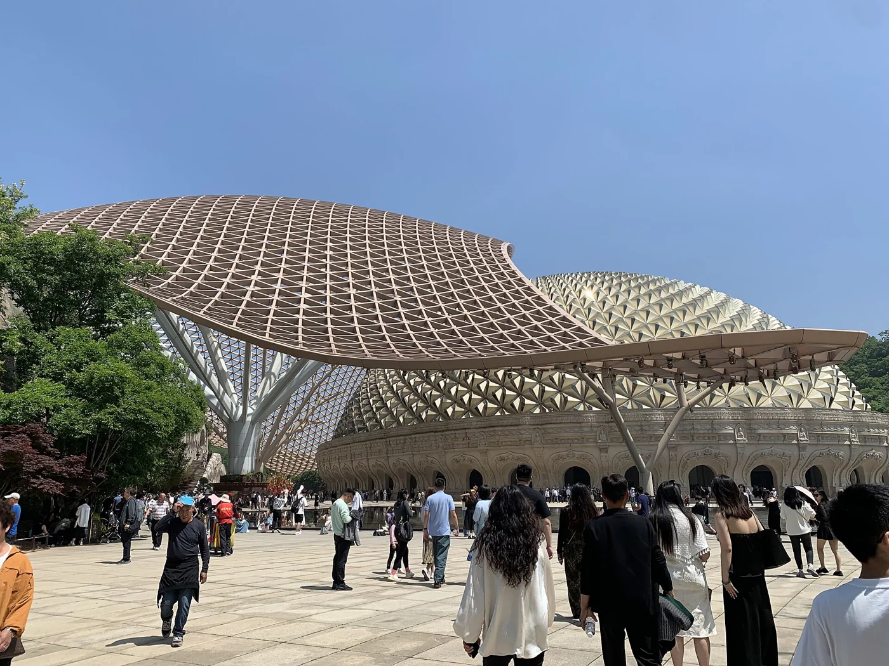

SUGGESTED JOURNEY / 6天
金陵与江南园林
- DAY 01
南京博物院与明孝陵，晚上休息。
- DAY 02
南京城墙、玄武湖与一处老城街区。
- DAY 03
转无锡，午后惠山古镇与寄畅园。
- DAY 04
鼋头渚半日，下午转苏州。
- DAY 05
苏州拙政园与博物馆，傍晚平江街区。
- DAY 06
虎丘或一座小园，留返程交通时间。
THE DESTINATION GUIDE / 华东
六朝金陵·江南园林·运河
江苏可沿长江和大运河理解：南京有都城历史，苏锡常有园林与工商传统，扬淮有运河盐商文化，苏北还有楚汉与滨海湿地。

江苏的地理骨架是长江、大运河、太湖与黄海。南京的都城传统、苏锡常的园林和工商、扬淮泰的盐运与水乡、徐宿的楚汉记忆，以及盐城和连云港的不同海岸，不能看成一条同质的江南线。运河不同时代的路线与功能也有变化。第一次旅行宜选长江南北一条短线，下一次再向淮北和海岸延伸；园林与博物馆都需要慢看，少换城市常比多集地名更好。
先用南京和徐州建立南北历史坐标，再沿运河看粮运、盐业、商帮和园林财富的关系。苏州的宅园、无锡的祠堂、南通的实业与泰州的水乡分别解释不同社会生活，黄海湿地则换成生态和潮汐的阅读方法。
3—5月、9—11月；春花和秋色看当年物候。
7—10天。适合一次主题子线；完整走遍需分次安排。
铁路可连接多数地级城市，具体站点常分老城站与外围高铁站。城区可用地铁、公交与步行，太湖、湿地和县域古镇仍要接驳。跨长江或从苏南到苏北宜当作一次正式转场，别把全省高铁网络误解为景点间随到随走。
南京、苏州等城市住轨交与老城交界处较方便；扬州、泰州可选古城外围，兼顾早茶和夜间步行。太湖与黄海湿地住景区附近更利于清晨观察，但需核对餐饮和返程接驳，古镇住一晚胜过连赶多处夜景。
02 / A JOURNEY, NOT A CHECKLIST
路线为独立主题子线，不建议机械合并。到达日与离开日需按实际交通另留余量。
南京博物院与明孝陵，晚上休息。
南京城墙、玄武湖与一处老城街区。
转无锡，午后惠山古镇与寄畅园。
鼋头渚半日，下午转苏州。
苏州拙政园与博物馆，傍晚平江街区。
虎丘或一座小园，留返程交通时间。
淮安漕运博物馆与河下古镇，住淮安区。
纪念馆半日，下午转扬州。
大运河博物馆与个园，老城慢行。
转泰州，早茶与梅兰芳纪念馆、凤城河。
转南通，选择博物苑与濠河；时间充裕再住一晚看唐闸。
03 / THE CITY NOTEBOOK
每站不限固定景点与食物数量；重要目的地、景区名录、地方饮食及行程分别展开。评级范围与版本逐项说明。
共 12 个城市与片区
南京要按历史层次和地理片区两条线来读。六朝都城、明初营建与近现代历史解释了博物馆、陵寝和街区为何各有主题；紫金山、玄武湖、秦淮河和长江则决定怎样连线。牛首山与汤山在江宁，浦口六合在江北，溧水高淳在更南部，都不是主城步行圈。下面完整收录2026年8月官方名录中的30个4A与2个5A景区，同时补入城墙、颐和路等重要文化目的地；收录不等于要求一次全部去。

景观、历史和看点分别细读。时间为游览建议；评级按各项名录版本标注。
这是覆盖紫金山南麓多处景点的整体景区，不是一座单体陵墓。明孝陵对应明初帝王陵寝，中山陵对应近现代纪念建筑，音乐台与林荫道路又适合慢走。第一次建议半天中山陵、半天明孝陵与神道；若再加灵谷寺、美龄宫，另留一天。注意5A等级属于整体景区，不把每座内部建筑各算一个5A。
名录地址：中山门外石象路7号
这里的主线是孔庙、科举、秦淮水运与市井商业，不能只当一条夜间小吃街。白天先理解夫子庙、江南贡院及科举博物馆的联系，再看街巷和河岸；入夜灯光展现的是当代游览氛围。瞻园、老门东可按兴趣另排，不建议在拥挤夜间才第一次寻找所有文化场馆入口。
名录地址：贡院西街53号
雨花台既是南京南部的历史高地，也以近现代烈士纪念空间为核心。沿纪念轴线看纪念碑、雕塑及相关陈列，比单纯把它当山林公园更能理解场所性质。适合希望补充南京革命历史的旅行者；纪念展陈、陵园景观与市民休闲区域的用途不同，参观与摄影保持庄重。
名录地址：雨花路215号
俗称总统府，但这片建筑群经历了两江总督署、太平天国及近现代政治机构等不同阶段。园林、办公楼和史料展室应按年代理解，不能把所有建筑都视为同一时期所建。先沿主轴建立空间关系，再进一两处专题展看档案和人物经历，适合对中国近现代史有兴趣的人。
名录地址：长江路292号
狮子山的位置适合看长江、江岸城市与南京城防地势。阅江楼的名字和构想与明初有关，但现在所见楼体于2001年建成开放，不能误当明代原楼。值得去的理由是把楼上的视野与江防、航运历史联系起来；楼内陈列再作为补充，晴好能见度比追逐所谓古楼年代更重要。
名录地址：建宁路202号
玄武湖位于明城墙和紫金山之间，是理解南京山水城林格局最直观的地方之一。环洲、樱洲、梁洲等洲堤组成湖中步行空间，历史上又与都城水域和黄册收藏有关。适合散步、看湖岸和城墙关系；可从玄武门进，挑两三个洲慢走，不必为了环完整个湖消耗一天体力。
名录地址：玄武巷1号
朝天宫的建筑群承载礼制、教育和地方历史，如今南京市博物馆以南京城市发展为重要叙事。这里与中山东路的南京博物院是两处不同场馆：想先理解本城兴衰，可优先朝天宫；想看江苏区域文明和综合文物收藏，可另去南博。庭院与展厅一起看，能把城市史放进真实建筑空间。
名录地址：朝天宫4号
阳山碑材是明代采凿的巨型石料遗存，直观呈现皇权纪念工程与古代采石规模。看点在碑座、碑身、碑额的体量和开凿痕迹，而不只是拍一块大石头。围绕明成祖为明太祖立碑的背景理解更有意义；配套明文化展示与原生石料遗址应分开辨认，适合与汤山方向同日安排。
名录地址：汤山街道阳山碑材
场馆围绕1946—1947年中共代表团在南京的活动展开，旧址建筑和文献陈列共同构成参观内容。先理解当时的政治谈判背景，再看办公与居住空间，能避免把旧址当成一组缺乏关联的房间。可与总统府、长江路文化街区连成步行线，但每处场馆预约和开放安排须分别核对。
名录地址：汉府街18-1号
栖霞山并非只有秋天的红叶。山中的栖霞寺、舍利塔和千佛崖体现南京佛教艺术与山林空间长期结合的历史，秋季则叠加枫林色彩。若重点看古建与造像，先了解文物保护与拍摄要求；若为赏秋而来，颜色取决于当年气温与物候。园区坡路较多，别再把牛首山塞进同一天。
名录地址：栖霞街88号
这是围绕南京大屠杀历史、遇难者纪念与和平主题建立的场馆，史料、证言、遗址及纪念空间共同组成参观。重点是按展线理解证据和个体经历，不能按娱乐景点的打卡节奏匆匆通过。建议单独留半天，参观后留出整理情绪的时间；遇到不适合儿童理解的展项时，由监护人决定观看方式。
名录地址：水西门大街418号
科技馆以互动展项、科学原理展示及科普活动为主要内容，适合有孩子的家庭用实验与操作替代连续古建参观。它的价值在于亲手观察现象并解释原因，而不是把所有装置都玩一遍。常设展、特定体验项目与活动的安排可能不同，出发前看官方开放展区，预留孩子停下来重复尝试的时间。
名录地址：紫荆花路9号
红山利用山地环境组织动物展区，适合通过栖息环境、行为观察和保护教育认识动物。不要只围着热门个体找拍照角度，安静观察取食、攀爬和休息往往更有内容。它不是古都历史景点，适合作为亲子或自然兴趣的一整段行程；坡路和园区距离明显，连续赶钟山容易造成体力负担。
名录地址：和燕路168号
高淳老街属于南京南部水乡商贸文化的一部分，木构店屋、窄巷和临近水域的关系比统一招牌更值得观察。它呈现的地方生活与主城秦淮风味并不完全相同，可结合当地饮食与地方展陈理解。高淳距离南京中心较远，建议把老街与固城湖或慢城组成南部专题，单留一天或住一晚。
名录地址：淳溪街道中山大街
珍珠泉以泉水和山林休闲为基础，泉池、湖岸与周边步道适合低强度散步。观察泉水的水色、出水形态和地形关系，比将其视作城市中随便一座湖更有意思。景区内不同游乐或体验设施未必包含在同一种票务安排中，先确定自己是看泉还是参加活动，避免抵达后临时拼凑。
名录地址：顶山街道珍珠街178号
南京博物院是理解江苏区域文明、历史文物与艺术收藏的重要场馆，不等于朝天宫内的南京市博物馆。历史馆可帮助建立先秦到近世的年代线，艺术与特展则适合按兴趣深入；民国主题展示只是其中一部分。首次不要以看完全部馆舍为目标，选两三个主题并留意展品出处、年代和工艺。
名录地址：中山东路321号
慢城是一片围绕乡村聚落、田园景观与休闲生活组织的区域，并不是一座围墙里的古城。适合看村落、农田、茶园等景观如何共存，具体体验则随季节变化。春季花田、采茶或乡村活动并非全年都有，安排时按实际物候选一条乡间线；更适合与高淳老街连住，少做跨城往返。
名录地址：桠溪街道
游子山以低山林地、宗教文化与登高休闲相结合，是高淳南部专题的山林一站。登山时可观察丘陵、水乡与聚落的关系，不必把它与名山险峰作同一种期待。有关孔子游历等故事属于地方文化叙事，欣赏传说时要与可考建筑史区分；适合想在老街之外增加步行的人。
名录地址：东坝街道
金牛湖是六合的湖泊休闲目的地，可从水岸、山体和村落的关系认识南京江北风景。这里与民歌《茉莉花》的地方传播记忆有联系，适合结合文化介绍理解，不把所有现代设施都当作古老遗存。湖面活动依运营与天气安排，单纯湖岸慢走也能成行；它与金牛湖野生动物王国是不同景区。
名录地址：金牛湖街道金牛湖景区58号
紫清湖位于汤山方向，游览内容更偏温泉度假、生态休闲与亲子体验。适合希望在古都人文行程中插入放松段的家庭，而非寻找古建筑原迹的旅行者。温泉、动物或其他体验可能采用不同产品和开放安排，按自己的主要需求挑选，不应只看到一个景区名就默认全部项目均可使用。
名录地址：汤山街道环镇北路8号
牛首山把佛教文化、现代建筑和山林景观放在同一条线上。佛顶宫与佛顶塔以当代建造和空间艺术见长，弘觉寺塔、相关遗迹与牛头禅传统提供更早的历史线索；不能把华丽的新建筑全部视作古代遗存。看点是进入建筑内部观察尺度、光线和装饰，再到山上理解地形。佛顶宫、塔区与交通接驳需留足时间，不建议只用两小时赶场。
名录地址：宁丹大道18号
这里以明代大报恩寺遗址及其历史展示为核心，现今可见的现代塔体、展馆与考古遗存属于不同层次。去的理由是理解南京佛教史、寺院城市关系与遗址展示方式，而不是误以为眼前高塔就是明代琉璃塔原物。先看遗址与说明，再看当代展示，有助于把真实历史和现代设计区分开。
名录地址：雨花路1号
云幽谷位于浦口汤泉方向，以乡村休闲、山水环境和分季节活动组织游览。适合愿意用半天到一天换取郊野节奏的家庭，核心不是古都史迹。选择前先查看当季实际开放项目和活动，区分景观散步与收费游乐；如果从主城出发，最好与浦口一带其他目的地组合，避免江南江北反复穿梭。
名录地址：汤泉街道龙井社区
溧水天生桥的关键在古代水运工程：人工开凿河道时保留石体形成桥梁，使陆路与水道得以相交。站在桥上与岸边观察石壁、河道和高差，能把它理解成交通基础设施，而不仅是奇石景观。适合对明代工程与南京南部历史感兴趣的人；水上项目是否运营需另查，不影响先看遗迹的主线。
名录地址：天生桥大道500号
莫愁湖的湖岸、庭院与园林建筑，适合认识南京老城西侧的休闲空间与历史文化。有关莫愁女、胜棋楼等故事与后世园林记忆相互叠加，宜把传说、纪念建筑及当代公园使用分开理解。它更适合慢走和看季节植物，可与朝天宫、老城南择近衔接，不必为了拍同一角度久候。
名录地址：水西门大街132号
平山以林场背景和丘陵森林休闲为主，是南京江北较适合放慢脚步的一站。看点偏向林相、步道及季节变化，不是大型古建群或都市商业街。适合想散步、简单登高和安排郊外休息的旅行者；行前确认开放路线与当地接驳，若无自驾，先解决往返再决定是否与六合其他点同日安排。
名录地址：马鞍街道平山林场大洼工区
纪念馆围绕渡江战役及南京解放相关历史展开，通过文献、实物与空间展示把宏观事件落到具体过程。参观后再看长江江岸，会更容易理解大江在军事与城市交通中的意义。适合与下关、长江大桥等组成江岸历史线；展览部分按馆方要求参观，不把纪念性空间当作一般拍照布景。
名录地址：渡江路1号
欢乐谷属于现代主题乐园，旅行价值在游乐设施、演出与朋友或家庭共同体验，没有必要为它虚构古都历史。适合希望换一种节奏的年轻人或亲子群体；挑选符合年龄、身高和体能要求的项目，提前看当日运营清单。它通常需要独立一天，不应被写成去完牛首山之后顺手玩完的晚间补充。
名录地址：欢乐谷北路8号
梅钢展示的是南京钢铁工业与现代城市生产的联系，适合把视线从宫城、寺院转向工厂、工艺与劳动史。重点关注开放展示如何说明原料、生产流程与工业遗产保护，而非把仍在运行的厂区当作自由穿行的摄影场。工业参观往往依预约、团队或特定路线安排，先核对正式开放项目。
名录地址：梅山街道梅钢路8号
这是以动物展示和亲子游览为主的独立景区，与金牛湖湖岸景区不要混为同一张票、同一个入口。适合对动物观察有兴趣的家庭；参观时留意物种习性、栖息环境说明以及园方规定的路线，不自行投喂。游览方式及不同区域开放情况随运营安排变化，确认项目之后再计算整天的交通和步行量。
名录地址：金牛湖街道野生动物王国
南京眼步行桥与河西滨江公共空间展现的是现代南京，不是古代秦淮景观的延伸。沿步行系统看桥梁结构、江岸尺度与建邺新城的关系，适合把奥体、青奥及河西城市发展放在一起理解。傍晚的光线更适合步行与看江，但要按天气、水岸管理和实际开放路线安排，不必只等夜景灯光。
名录地址：河西大街239号
水墨大埝把乡村环境、生态休闲与运动体验联系起来，是浦口西部郊游的一种选择。适合愿意到村落和丘陵间慢行的人，和主城密集古迹是两类不同体验。具体展馆、运动或活动项目应看当季安排，不把一个景区名字等同于全部设施始终开放；与浦口其他点连线时注意乡间道路与回程条件。
名录地址：永宁街道岔琥路29号
南京明城墙顺应山水地势展开，城砖铭文、城门与台城附近的湖山视野都值得细看。它不是只供登高的一堵墙，而是理解明初都城规模和城防工程的实体材料。第一次选一段开放城墙，不必追求全部走完；如对军事结构有兴趣，可另看中华门瓮城。具体登城口和开放段以城墙管理方当日信息为准。
颐和路一带的近代住宅、街道尺度与绿荫，适合观察20世纪南京城市规划和居住生活。看点是街区整体关系，而不是把每栋房子都看成同一位名人的故居。很多建筑仍有办公或居住功能，以公共街道步行为主；少数可开放建筑和展览按实际安排进入，不擅闯院落。
老门东位于南京老城南，是理解城门、街巷商业与民居肌理的一处入口。现有街区包含修缮、更新和当代商业使用，不能把整片建筑外观都当作未变动的古代原貌。适合从支巷看院落、砖木细节和城市更新，再挑一两种地方小吃；与夫子庙相邻不代表同一时间把所有展馆和餐馆都能走完。
南京长江大桥把现代桥梁技术、铁路公路交通与国家工业记忆联系起来。看点包括桥体与长江的尺度、桥头堡形象以及周边江岸的城市变化；它并非普通公园里的观景桥。采用正式开放的人行与滨江路线，车行和铁路区域不能进入；若再参观专题展或纪念馆，需核对各自开放安排。
场馆将江宁织造、丝织工艺与曹雪芹及《红楼梦》的文化联系放在同一处说明。建筑空间与专题陈列各有内容，适合已经看过古都政治史、还想补经济生活与文学线索的旅行者。文学人物想象和历史上织造机构的真实职能应区分；可与总统府、梅园新村按地理邻近组合，但别把多个馆都压成半小时。
想知道南京为何被称为六朝古都，可以在这里从考古遗迹、器物和城市生活进入。它帮助把孙吴、东晋、南朝等不同历史阶段分清，也能与后面参观的明城墙、近代史迹形成年代对照。适合在旅行前段建立时间框架；不要只看展厅的现代设计，留意器物年代、出土背景与都城空间之间的联系。
从早餐、主食到家常菜、甜点与茶饮，了解做法、吃法和地方背景，再按自己的胃口搭配。
盐水鸭是经腌制、卤制等工序做成的鸭肉菜，重在皮肉本味、咸鲜与嫩度，并不是红卤烤鸭。南京地方志资料记录了当地长期的食鸭传统，但不能把一道现代成形菜品的精确起源直接上溯到六朝。可先尝不蘸料的小份冷切，观察鸭皮、脂肪与瘦肉的层次；人数少不必为完整摆盘购买整只。
板鸭与盐水鸭不是同一种做法。它更强调腌制、整理鸭体和干制等过程，风味与质地随传统工艺和现代产品而变；作为伴手礼购买的包装板鸭，常需要按标签熟制后食用。理解它与南京禽鸭生产、保存和节令馈赠的关系，比把所有鸭制品统称“盐水鸭”更有收获。
南京烤鸭通常切块后配甜鲜卤汁食用，鸭皮焦香、卤汁浸味是主要体验，和北京烤鸭薄饼卷食的方式不同。它体现了同一城市中盐卤、烤制等多种鸭馔传统并存。初尝可请商家把卤汁分装，先尝鸭皮和肉，再蘸少量卤汁；不是颜色越红、汁越多就越代表本地标准。
鸭血粉丝汤把熟鸭血、粉丝、鸭杂等组合成一碗热汤，不同摊店的汤底与配料会有差异。南京鸭馔产业让副产品进入平民日常饮食，地方志也讨论过鸭血汤与后来加粉丝版本的变化。吃前先尝汤，再让粉丝吸味；不吃内脏可说明。有关某位名人偶然发明的故事，作为传说了解即可。
这种烧饼以分层酥香和芝麻表面为特点，鸭油参与制酥让它与南京食鸭文化相连，并不是在普通烧饼里塞鸭肉。刚出炉时层次和脆感最清楚，常与汤羹、干丝或鸭血汤搭配。它也进入秦淮传统小吃的配对叙事，适合当早餐或少量加餐；存放后回软是质地变化，不必一次买太多。
南京汤包的重点是薄皮、肉馅和热汤汁，常见猪肉馅，也有加入时令蔬菜或蟹味的版本。它与江南包点传统相通，不宜宣称只有南京才有。夹起时托住包底，先小口开皮、稍晾再吃，可按口味蘸醋。选一笼配清汤或茶，比连续吃多种重油小吃更容易分辨肉香与汤味。
龙袍的蟹黄汤包把蟹肉、蟹黄等鲜味与薄皮汤包结合，属于六合地方饮食中辨识度较高的一类。不同规格和配方的蟹用量、汤汁及食用方式不同，点单前问清。关于帝王赐名、秘方代代相传的故事不能直接当史实；旅行中更值得比较皮、馅、汤的关系，蟹季之外也要留意实际原料说明。
牛肉锅贴通常为长形或月牙形贴煎面点，底部焦脆，上部保留面皮柔韧，馅料和汤汁构成主要风味。南京清真饮食与市井小吃文化让它成为常见早餐或加餐，但不能把所有出售锅贴的店都默认成清真餐厅。有饮食要求先确认；刚出锅的馅汁很热，可先咬小口并配清汤。
牛肉馄饨以薄皮包裹牛肉馅，汤头和小份馅料相配，呈现南京早餐中常见的汤食节奏。其地方性在日常食用场景、调味和清真饮食联系，而不是一个能够精确考证的独家发明年代。吃时先尝原汤，再按习惯加醋、胡椒或辣油；若同时点锅贴，留意两者合起来已是一顿完整早餐。
皮肚是处理后呈蓬松多孔状态的猪皮，入汤后吸汁，是这类南京面条的辨识点。面中常见青菜、肉丝及其他配菜，组合随店家而变，不能只按“浇头越多”判断特色。先尝皮肚吸收汤汁后的口感，再吃面条，能理解它为何是当地居民的日常正餐；想吃清爽一点可少加辣油。
小煮面通常指面条与肉丝、青菜等配料按碗小锅煮制的做法，汤与面一起成形，和先煮面再集中加浇头的方式不同。它表现的是城市日常厨房的现煮风味，配料并无全城统一的硬性标准。点单时问清肉类、内脏或皮肚等选择，趁热吃一碗，往往比在景点中连续尝许多零食更接近南京人的一餐。
回卤干以豆腐干或豆腐泡等豆制品配卤汤、芽菜等组成，重点是豆制品吸收鲜味后的质地。“如意”的吉祥寓意与豆芽形态等地方解释有关，不需要把每个版本都附会成宫廷菜。它适合与烧饼等干点搭配，既能尝到豆香，也能理解秦淮小吃一干一稀、轻重相配的组合方式。
干丝是将豆腐干切成细丝后烹调的豆制品，开洋指虾米一类干制水产，负责增加鲜香。它与江南、淮扬饮食互有联系，并非南京专属，但在秦淮传统小吃组合中占有位置。看点在刀工、豆腐丝的柔韧和汤汁鲜味；有甲壳类过敏或素食要求的人，应问清汤底和虾米使用情况。
素菜包以蔬菜、菌菇等组成馅料，具体配方由店家决定，南京传统小吃中常与酥烧饼、干丝等搭配。它的价值在清鲜馅料和松软包皮的平衡，而不只是作为肉包替代品。称为“素”也不能自动等同于严格纯素，点单时仍可问明油脂和汤料；早餐吃一个配热饮，便能观察地方居民日常。
芋苗是甜品里的小芋头，经煮制后与糖汁、桂花等搭配，吃的是软糯芋肉与温润甜香，并不是芋头的幼苗。传统版本中汤汁的颜色和稠度有工艺差异，不能据颜色推断都是红豆汤。它适合在秋凉时当温热甜点，小碗慢吃；这一类南京街头甜食体现了桂花、根茎与糖水的组合。
赤豆与小元宵形成稠润甜汤，部分做法加入酒酿、桂花等，豆香、米香和轻微发酵香气共同构成味道。元宵通常是小份米团，不等于每颗都有大馅料的汤圆。它与江南甜食文化相通，在南京小吃场景中很常见；介意酒酿成分的人可先询问版本，吃过正餐后点小碗即可。
藕孔灌入糯米后慢煮入味，切片时能看到藕孔和米粒的结构，常再配糖汁或桂花。它是南京及江南多地共享的传统甜食，重点是藕的粉糯、米的黏软和甜度平衡，不必为它编一个独有的古都起源。可作为冷盘或少量甜点，切小块慢尝，比只喝表面糖汁更能分辨质地。
梅花糕因模具造型得名，通常将面糊与豆沙等馅料在模具中烤制，表面再配小元宵、果仁等不同装饰。它在南京、苏州等江南城市均有传播，不应把共享小吃写成单一城市专利。趁热时外层与内馅反差明显，注意内部温度；观察师傅在模具中灌糊、加馅、翻烤也很有意思。
素什锦把多种蔬菜、豆制品等分别处理后合炒或拌合，南京年节饮食中常见，食材组合寄托丰富、团圆等寓意。不同家庭所用种类和数量并不完全一致，不能把一个固定“十样”配方当成所有南京人的标准。旅行中若在家常菜馆遇到它，适合与鸭馔搭配，理解城市饮食也包含家庭节令习惯。
芦蒿取嫩茎，与香干同炒，吃的是脆嫩、草木清香和豆制品的搭配。南京长江沿岸洲地的种植与上市节令，使这道菜和本地春日饮食联系紧密；并不是一年四季每家店都能提供同样品质。初尝选相对清淡的做法，容易感受芦蒿本味；在重口味鸭馔和面点之间，它提供不同的口感。
这是六合地方熟食传统中的一道，以猪头部位经清理、卤煮等处理成菜，主要体验皮、脂肪与瘦肉不同的质地。它偏向熟食拼盘和家常下酒菜，不能因为名为地方名物就要求每位游客都尝试。选有清晰食品经营信息的正规店铺，点少量现切熟食，了解卤香而不是追求夸张大份量。
固城湖一带的河蟹养殖与高淳水乡环境有关，旅行价值不只在吃蟹，也在认识湖荡、养殖与地方集市。通常以清蒸等方式呈现蟹肉、蟹黄或蟹膏的味道，适合在实际上市季节了解产地与规格。不同年份生长和供应有差异，不把某个月份保证“最肥”；选择正规渠道和充分熟制的菜品。
雨花茶属于绿茶，外形细直，重在清鲜茶香和适当水温、浸泡时间所呈现的口感。它让旅行从吃小吃转向当地茶文化与近现代产品发展，而不是一款能直接追溯到六朝同名配方的古茶。可在正规茶馆少量品饮或购买标注产地、日期的茶叶；先尝淡泡，再决定是否喜欢它的风格。
“秦淮八绝”不是随意列八道南京菜，而是传统小吃馆与成套小吃组合的文化称呼，常以一干一稀相配来理解。烧饼与干丝、锅贴与牛肉汤等组合能说明当地人怎样安排口感和饱腹感。今天餐馆的套餐、店址与经营会变化，选餐时按实际菜单核对，不把旅游套餐的所有内容都当作固定不变的历史原样。
收录全面，不代表一次全去。先选主题，再决定天数。
首次三日可安排：第1天南京博物院或六朝博物馆，下午总统府，傍晚老城南；第2天钟山，只选中山陵、明孝陵等一组深入；第3天牛首山，回程按体力决定是否散步。若有五天，第4天玄武湖与城墙，第5天在纪念馆、栖霞山或江岸历史线中选一条。高淳、溧水、浦口六合各自另开一至两日专题，不把全市32个评级景区写进短假。
苏州园林与古城水网并非两套孤立景观：宅园背后是士人生活、商业财富与工匠技术，巷道和河埠则连接市民日常。看园林宜关注门洞、漏窗与借景如何让有限地块显得深远；昆曲、丝绸和当代城市也应各留一条线，不把苏州只记成白墙黑瓦。

景观、历史和看点分别细读。时间为游览建议；评级按各项名录版本标注。
以水池为中心慢走，比较亭、廊和山石如何改变视线。先看整体水面，再回到局部窗景；旺时宁可少拍几张，也留时间观察空间转折。可以在同一水池旁停留，比较近处山石、远处亭阁与树木如何分层，再转到回廊看景物被重新组合。园内建筑与植物有历次修整，读说明比把一切当作最初面貌更准确。
本馆可看吴地考古、工艺与书画，也可观察当代建筑怎样回应园林。馆区和展览安排分别核对，不把建筑外观替代文物阅读。重点把出土器物和工艺放回吴地社会生活，建筑的光线和庭院可作为观看背景。馆区较多，本馆与西馆不是同一地点，预约和展览先分别核对，半天只选主要专题更从容。
沿平江河走一段主路，再转入开放支巷看桥、井与居民门面；把沿河店铺与生活住宅区分开，水乡尺度往往藏在小桥前后的转弯里。观察小桥两端的店铺、巷道和住宅界面，可以理解河不是单纯拍照背景，而曾承担运输与日常用水。评弹等体验选择明确公开接待处，别把旅游演出等同街区原本的全部生活。
以厅堂、廊道、山石和庭院串联的园林空间，适合与拙政园的水面主导格局比较。先留意长廊怎样控制进入花园的节奏，再看门洞框景与冠云峰等石景；从不同方向回看比单一机位更有趣。园林的保存和修缮有历史层次，今天的植物、陈设不都来自同一时期。
塔、山体、剑池与后世纪念构成丰富的地方文化景观，适合把古迹、地形和传说分开读。先看塔的结构与倾斜说明，再沿山路观察寺院遗迹、碑刻；剑池相关吴王叙事以文献与现场解释为准，不当作已完成考古证明。台阶与坡路不少，留出休息而非只为塔前合影。
小尺度宅园通过水池、厅廊和边界处理显得深远，适合看精细的空间比例。坐在池边比较亭、墙与倒影，再穿门洞看视线如何变化，能理解园小并不等于内容少。园内日游和可能安排的夜间活动是不同项目，先核对所选参观，不必为了夜景挤掉白天读园时间。
从蚕桑、缫丝、织造与服饰实物认识丝绸怎样成为苏州的生产和消费传统。先分原料、工具和成品，再看纹样与使用场合，别把所有精细织物都归入同一技法。它与商业丝绸店不同，适合在购买围巾、缂丝等之前建立概念，原件、模型和演示按标签与当日安排理解。
昆曲的曲谱、舞台、服装和人物材料可补充园林背后的听觉与表演世界。先了解唱念、身段与剧目关系，再听公开音像或演出，会比只把水袖当古装表演更有内容。展馆参观与特定演出场次分开核对，历史建筑内尊重保护要求，不把每一天都当有完整剧目可看。
沿山塘河看桥、街市、会馆及生活巷道，理解水路怎样连接古城与虎丘方向。商业核心较热闹，支巷更容易看街区尺度，历史建筑和新经营立面应按说明区分。可选择一段单向步行，船游另看路线；居民门口、狭桥和河埠不为拍照长时间占用。
东山把太湖岸线、村落、果园与古建串在一起，适合离开古城看山水如何支撑地方生活。可选陆巷古村或一条公开湖岸为主，结合一处正式开放建筑，不需把整个半岛绕完。采果、茶园和民居并非天然开放，先确认接待条件；与苏州古城之间按远郊一天安排。
以下按所列来源版本补充名录，不限固定数量；转录待核者单独提示。评级属于完整景区，不自动授予每一处内部建筑。
太仓沙溪以沿河街道、桥梁、传统民居和市镇商业空间见长，适合从水陆交通看江南古镇如何形成。主街之外留意院落进深、河埠与生活支巷，保护修缮和旅游经营并存。正式开放馆舍可选一两处，建筑年代按说明，拍摄居民先征询，不进私宅找机位。
金鸡湖以城市湖面、公共岸线、现代建筑和文化休闲设施形成苏州新区景观，与古城园林提供不同城市视角。适合选一段湖岸慢走，比较高层、桥梁和滨水空间如何组织公共生活。游船、演出与场馆分别核对，灯光活动不保证每晚同样，湖区很大不必整圈赶路。
周庄以河道、桥梁、沿河街巷和传统宅院构成江南市镇格局，适合从水运、家族和商业关系理解聚落。主街商业之外可选支巷与开放院落慢看，建筑原构、保护修缮和新经营分别阅读。游船与单独项目另查规则，居民生活和私宅不打扰，夜景并非古代原貌的直接再现。
同里由水网、街巷、桥梁与传统建筑构成，退思园等园居空间可帮助理解市镇生活和文人审美。先看聚落水路再入一两处院落，适合园林与生活史兴趣者。古镇商业、历史遗存和修复陈设各有层次，具体馆舍开放、票种与游船分别核对，不必每处赶场。
狮子林以密集湖石假山和曲折路径著称，园林与佛教、文人交往等历史层次相连。适合把假山、池水与厅堂视线一起看，走不同高度感受空间转换，而非把迷路当唯一乐趣。山石通道狭窄，按秩序通行，现状中的修整和各建筑年代依说明阅读。
苏州白马涧以山谷、水面与人工营造的生态休闲空间为主，可看城市西部山地与郊野活动的结合。适合轻徒步、家庭慢游，溪谷景观、季节花木与游乐项目分开选择。地名传说不等于确证历史，山道、涉水与活动开放按当期安排，不进入未开放林地。
天平山以山体、古木、范仲淹相关纪念空间和题刻等组成文化山林，秋季树色之外也可看石景与园林。适合登山、诗文和人物史兴趣者，先读建筑年代，再选一段山路比较视线。红叶取决于气温与季节，不保证固定日期盛景，古树与题刻不攀触。
吴江黎里沿河街道、桥梁与传统民居形成市镇格局，开放展陈可看商贸、人物和工艺记忆。适合从水埠、院落进深与支巷读日常生活，旅游经营和居民空间并存。古建原构、保护修缮与复原陈设需区分，挑一两馆慢看即可，拍居民先征询，不进私宅。
天池山景区位于吴中藏书一带，天池山、花山、白象湾等片区各有山林、岩石、泉水和人文展示。适合看石景、题刻和山地寺院，先确认所选入口与步行线路，不能把不同片区当同一院落。现存建筑与修缮、传说与史料分层读，登山按体力安排。
苏州园林景区由拙政园、留园、虎丘等组成，分处不同地址，需分别预约与游览。拙政园可看水面组织，留园重空间转换与建筑，虎丘兼具山地和塔院。联合等级不等于古城所有园林都属同一景区，适合每天深入一处，建筑原构、修缮和不同历史层次按说明区分。
御窑金砖博物馆以烧造宫殿铺地用砖的工艺、遗址与相关器物为主线，金砖之名不表示用黄金做砖。可从泥料、成形、烧制和运输看普通建筑材料背后的技术与组织。适合建筑、手工和工业史兴趣者，真实窑业遗存、模型与体验分开读，课程不代表完整生产流程。
上方山将山体、林地、园林与寺院相关空间组合，登高可观察苏州西南山湖和城市边缘。适合轻徒步、植物观察与历史文化兴趣者，花季与平日体验不同，先选一条缓坡线。古建修缮、现代园景和不同年代题刻分开阅读，不把周边所有设施都当公园同一入口。
沙家浜、虞山与尚湖构成联合旅游区，芦荡、革命历史、山地文人文化与湖泊园景各有主题，地址与交通也不同。适合分日择重点，先用常熟地图理解三处关系。戏曲情节、真实史料和后建场景分清，联合等级不等于一天必须全部赶完，演出与各片区开放分别核对。
苏州西山位于太湖金庭一带，湖岸、山林、古村、宗教与农业景观分布较广，不是一处单院落。适合按兴趣选古村与山地各一线，交通、独立景点门票与步行时间分别规划。湖区遗存、修缮和当代旅游建设分层看，果园采摘依正规开放，别把岛名当可全境自由进入的许可。
寒山寺因张继《枫桥夜泊》等诗文传播而著名，寺院、钟声和枫桥周边共同形成文学地景。参观可先读诗的历史语境，再看院落、碑刻与现存建筑，后世修建和人物传说需区分。适合诗文、宗教建筑兴趣者，礼佛与旅游各按个人意愿，敲钟等活动及开放另查规则。
苏州湾黄金湖岸依东太湖水面组织公共步道、绿地、现代建筑及文化休闲设施，能看吴江城市发展与滨水生活。适合一段湖岸散步和选择一处当期展览，湖区很大，不必按整圈徒步安排。场馆、游船与演出各有开放和预约，灯光和天气影响观感，水上项目仅走正规区域。
常熟方塔古迹名胜区以方塔等历史建筑及周边园林、展陈形成旧城文化空间，可看塔的结构、城市地标功能与长期保护。适合建筑、碑刻和县城史兴趣者，先读各文物年代，再看水面与庭院视线。登塔是否开放不应成为唯一价值，修缮和后建景观各按说明区分。
梅李聚沙园围绕聚沙塔等历史文化线索配置园林、公共休闲和相关展示，可看古塔与市镇生活的关系。适合古建、书法与县域慢游，先看塔的年代、形制和保护说明，再走园路。现存景观有不同修整层次，不因亭桥古朴就认作原构，开放建筑与活动依当期安排。
张家港香山以低山、林木、登高视点与人文纪念空间组成，可在山路上观察长江沿岸平原与城市、乡村布局。适合轻徒步、季节植物和地方文化兴趣者，传说与可靠史料分层看。先选正式游线，开放寺院和园林另按规则，山不高也有台阶，雨后和高温留休息时间。
震泽以河道、桥梁、塔院和传统宅园构成江南市镇格局，蚕桑、丝业与商业生活是理解地方历史的重要线索。可先沿河看街区，再选正式开放院落读空间与器物，旅游经营、修缮和遗存分别看。适合工艺、建筑与生活史兴趣者，私宅不进入，季节活动另按当期安排。
昆山千灯以沿河市镇、石板街、传统建筑和昆曲、人物等文化线索形成游览地。可把院落、戏曲展示与街巷一起看，理解表演艺术和地方社会的关系，不只停在美食店。古建遗存、修缮和当代复原分清，演出和展馆开放先查，居民私宅与生产生活空间不打扰。
昆山亭林园依马鞍山山体与园林、历史文化展示组成，可看低山、古木与旧城空间的关系，也能从顾炎武等人物记忆延伸阅读。适合轻徒步、古建与地方史兴趣者，先选缓坡和一处展陈即可。碑刻、纪念建筑与后期园景年代分别看，登高路线按体力安排。
太仓现代农业园区的玫瑰庄园以花卉园艺、设施农业展示、生态休闲与亲子活动组成，可看现代种植技术怎样进入旅游空间。花况和农事随产季变化，采摘、课程与普通游园分别预约。适合家庭和园艺兴趣者，生产区与游客区有界，参观不必购买农产品或按宣传保证全年盛花。
苏州太湖湿地公园以湖滨水面、湿地植物、步道与人工生态管理形成近郊游览地，可看太湖岸线与城市休闲如何连接。适合自然观察、慢行和亲子科普，鸟类与花况随季节、水位变化。保护区域、游客步道与独立体验项目分清，不进芦苇深处追拍，不投喂野生动物。
甪直沿河街巷、桥梁与传统民居形成紧凑的水乡格局，保圣寺相关文物和地方人物展陈提供建筑之外的历史线索。适合慢看桥头、河埠与宅院进深，再选择一两处正式馆舍。现存构件、修复与陈设按说明分辨，居民生活与旅游商业并存，演出和宗教空间另查开放。
木渎以河道市镇、传统宅院与私家园林相互叠加，可从商贸、家族生活和园居审美三条线选择重点。严家花园等开放空间要具体核对票种，不宜只按古镇大门判断范围。古建遗存、历次修缮和后期陈设分清，名人传说不替代文献，主街之外的生活支巷适合慢走。
盘门以水陆城门、古城防背景与周边园林景观见长，可看城门、河道和城市防御如何配合。适合建筑与城市史兴趣者，先读结构和总图，再比较门道、桥梁与水面位置。历史遗构、修缮和后建园景各有年代，不能把今日景区边界当历代城址全貌。
张家港永联以村庄建设、产业发展、农业与旅游休闲空间组成乡村旅游片区，可观察集体经济和居民生活如何进入展示。它主要呈现当代乡村发展，不需附会古镇历史。适合看村史、公共设施和正规农事体验，生产区域、住户与游客区分清，课程、餐饮和采摘另看安排。
苏州大阳山以森林山地、植物园与文殊寺等不同片区组成，可从植物栽培、自然山体和宗教文化中选择主题。适合轻徒步、园艺和家庭活动，植物园与寺院入口、票务和开放不同。古建修缮、现代展览温室与林路性质分清，按体力走正式线路，不必一天赶遍所有分区。
镇湖刺绣艺术馆围绕苏绣作品、材料、针法与传承展示，可看丝线、底料和层次如何形成图像。适合手工、绘画与设计兴趣者，挑一件作品读工艺说明，比只判断像不像照片更有内容。真品、复制与体验作业分清，体验不等于掌握完整技艺，参观与购买可独立安排。
光福片区以太湖东岸山地、古镇、寺院与梅花等季节景观组合，适合按香雪海、司徒庙等具体开放点选择路线。景区范围较广，入口、交通与独立场所票务先看清。古木、题刻和建筑年代分别读说明，花期依天气变化，工艺经营与历史遗存性质不同，不必全片赶场。
张家港暨阳湖以湖面、湿地植物、园路与公共休闲设施组成城市生态空间，可看人工环境营造和居民生活的结合。适合一段水岸散步、亲子观察或季节赏花，湖区与独立游乐项目规则不同。鸟类、花况与水位会变化，不保证固定画面，保护植物不采摘，非开放水域不下水。
吴江静思园借用江南园林的厅堂、水面、石景和回廊语言形成当代园居空间，适合比较传统造园方法如何被重新运用。历史建筑构件、迁建修复与新营建部分应按说明阅读，不能把整园当明清原址古宅。可从窗景、路径和山石尺度慢看，展陈与活动另核对开放。
昆山锦溪以湖荡、桥梁、沿河街巷和传统民居形成紧凑的水乡格局，博物、工艺等展示可补足街区之外的文化内容。适合从桥、河埠与住宅进深读市镇生活，再选一两处正式馆舍。古建、修缮和当代经营分层看，私人收藏展品来源与性质按说明，不进居民私宅。
吴中太湖旅游区由东山、穹窿山、旺山等片区组成，湖岸古村、山地林路、宅园和宗教建筑主题不同，交通也需分别规划。适合每天选一片深入，联合5A不表示太湖所有村镇都在同一评级范围。各独立场所开放和票务核对，建筑年代、传说与修缮分层阅读。
吴江运河文化景区围绕平望等运河节点的水路、桥梁、街区和相关文化展示形成，可读交通、交易与居民生活的联系。适合先看地图和水系关系，再沿开放岸线与街巷慢走，历史遗存、修复和后建商业分清。具体馆舍、船线与活动分别确认，运河作业岸段不进入。
苏州乐园森林世界以森林主题、机动游乐和演艺组成现代娱乐园区，适合明确计划游乐一日的家庭或朋友。主题造景和角色故事不属于古代遗址，也不能代替真实森林科普。先按身高、身体条件和当天运营选重点，排队、休息与交通要纳入，水上或夜场等内容另查票种与季节。
从早餐、主食到家常菜、甜点与茶饮，了解做法、吃法和地方背景，再按自己的胃口搭配。
细面配红汤或白汤，焖肉、爆鱼、虾仁等浇头可分放，汤鲜、面条利落与浇头火候共同决定一碗。它与苏州日常早市、茶馆和时令饮食相连，不是越甜越代表苏式。先尝汤再吃面，现炒浇头别久泡；一碗选一两种即可，留肚子给其他菜点。
属于苏式汤面谱系，常见红油爆鱼或白汤卤鸭等组合，细面、鲜汤和浇头相互衬托。昆山地方技艺与市镇生活使它有明确辨识度，和苏州城内其他面派可以比较，不需套乾隆传说解释起源。先问浇头与汤型，趁热食，别用单一汤色判断所有版本。
鳜鱼改刀、裹粉炸成蓬松外形，再浇酸甜卤汁，外酥内嫩、造型与上汁声音都是观看点。它展现苏帮菜刀工、油温和酸甜平衡，名字不表示用松鼠肉。适合多人分享，鱼刺仍需留意，先尝鱼肉再带少量酱汁，不以酱越多越红衡量功夫。
熟鳝肉切条后炒制调味，上桌浇热油激发葱蒜等香气，鳝条软嫩、酱味浓而带脂香。它把江南河鲜与餐桌呈现结合，响声只是最后一步，前段去骨和火候更关键。需充分熟制，先问配料与辣度，热油未静时别急夹，配饭或面小份分享即可。
虾仁去壳后处理、滑炒，强调鲜嫩与清爽，不靠重色酱汁遮味。苏州河湖物产与细腻烹调习惯在其中相遇，具体虾种、养殖或供应按菜单说明，不宣称一定野生太湖虾。上桌先尝原味，少蘸调料，海鲜过敏者避开，按人数点份量而非只看盘面大小。
木渎藏书一带的羊肉传统常见白汤、白切和红烧，久煮使肉酥而仍成形，汤与肉各有看点。相关制作有地方传承，店铺遍及苏州，不必为“只有原产地才真”跨城赶路。先尝汤和原肉，蘸料另放，羊肉面也属饱腹选择，食俗不能直接等同养生功效。
萝卜经过腌、晒等处理，形成咸甜脆韧的口感，与甪直水乡家庭的蔬菜保存和小菜习惯相连。它不是一盘新鲜炒萝卜，也不需要凭色泽深浅断年份。适合配粥、米饭或面少量尝，散装先问保存条件，包装款看配料与盐糖，作为伴手礼小包分享更合适。
猪肉等煮熟、拆松并炒制干燥，纤维蓬松，咸甜与肉香集中，是太仓有辨识度的加工食品。它可配粥、夹面包或用于糕点，体现肉类保存加工与城市消费的结合。肉松、肉粉松配方和工艺不同，购买读标签，别仅凭蓬松度认定原料或等级，开封后按要求密封。
油酥与水油皮叠出薄层，馅料可甜可咸，鲜肉、豆沙、五仁等版本各有口感。它属于江南月饼传统，苏州是重要传承地，不能一律按广式饼皮标准判断。现烤鲜肉款趁热，甜馅可配清茶小块吃，包装款注意馅料、制作日期与保存，不将所有款都当耐久干点。
青团、方糕、条头糕等以米粉或糯米粉制作，蒸、揉、包馅的方式不同，形成松软或黏韧口感。它和江南稻作、节令、家庭礼食相连，挑当季两种比较，比一次买齐更能理解。颜色来源和甜咸馅先问，鲜制品不耐久存，携带时遵循具体冷藏与再热要求。
以酥皮包糖、果仁或其他馅料，烤成细长扁形，外酥松而内馅香甜，名字来自外形的生活联想。它可见于同里等江南市镇的糕点传统，并非每个水乡都使用同一配方。适合切小块配茶，比较酥层与馅香，不需找一个未经证实的名人发明故事，包装携带防潮防压。
洞庭东山、西山一带的茶叶经杀青、揉捻、干燥形成卷曲外形与清鲜香气，产地、采摘与加工共同影响风味。它把太湖山地农业与苏州茶事连接，不以“越绿越好”或卖家口述判品质。选正规标识小量试饮，水温与浸泡时间会改变苦涩，晚间饮茶按个人习惯调整。
收录全面，不代表一次全去。先选主题，再决定天数。
第一天上午拙政园，午后博物馆，傍晚走平江街区；第二天选虎丘与一座不同格局的小园，下午在古城喝茶休息。园林爱好者可增一天看留园或网师园，先挑两三座细看，水乡古镇另排，别连续奔赴同类夜景。
无锡一面向太湖，一面保留惠山脚下的祠堂与园林，近代工商发展又为城市加入新的层次。湖景看风、水岸和山体，寄畅园看借景，古镇看宗族与地方社会，三者不能只当同一组春日照片。鼋头渚的樱花有明确季节，其他时节仍可把重点放回太湖山水。
景观、历史和看点分别细读。时间为游览建议；评级按各项名录版本标注。
沿湖岸看半岛地形与太湖水面，再选择一段山路俯瞰。花季之外可看石刻与岸线，是否乘船视天气和当日运营决定，不为凑景硬赶。半岛、湖湾和远山的关系比花期照片更稳定，沿岸选择一处停下看船与水面便能理解“太湖佳绝”的观看方式。乘船和登岛不是必选，先考虑当日风况、时间与个人兴趣。
以祠堂群和街巷关系为主，挑一两座开放建筑看门厅、碑记与祭祀空间。沿河商业区和历史建筑参观各留时间，别只停在小吃街。祠堂内看姓氏、捐建和祭祀材料，能理解宗族如何把商业财富、教育和公共事务留在建筑上。部分空间仍有活动或管理边界，进入与拍摄先确认，不把所有院门都当游客通道。
沿池塘观察山石、树木与远山如何构成借景，比较门洞里外的视线变化。园不大但层次丰富，放慢速度比反复寻找同一拍照角度更有趣。水池和假山之外，也看树干、亭廊怎样把远处惠山引入画面。借景随季节植物和观察位置改变，不必寻找唯一最佳照片；园林不大，慢看空间转换比迅速走一圈更有价值。
地方历史与艺术专题让太湖、运河和工商业之间的关系更具体，适合先看时间序列，再选择书画、工艺等兴趣。器物出土地和原本用途值得细读，不把全部收藏都当城市本地出土。博物馆与周边现代公共空间可同日慢看，特展、分馆和预约按馆方当期安排。
河道、石桥、仓厂与临水街巷展示无锡运河商业及工业的联系，夜间经营只是今天的新层次。白天看河埠、门面和桥位更容易理解运输尺度，可选择一段慢行并看正式开放的工艺或工业展陈。街区含保护修缮，不将所有仿古装修都认作历史原构。
以陶器、紫砂与地方窑业相关展示理解原料、成形、装饰和烧成，先看器物用途，再看工艺差异。紫砂并不是所有深色陶壶的统称，名家、古物和现代工艺品也要区分。适合在逛作坊与买壶前参观，宜兴与无锡主城有县域转场，若还看竹海应另住一晚。
以下按所列来源版本补充名录，不限固定数量；转录待核者单独提示。评级属于完整景区，不自动授予每一处内部建筑。
崇安寺一带是无锡老城公共商业中心之一，寺院记忆、近代城市设施与今天步行街叠加，可看市民日常与旧城更新。名称不意味着整个片区都还是一座完整寺庙，建筑遗存和新建商业分开读。适合与无锡其他老街比较，选历史说明与开放建筑细看，不以购物作为唯一体验。
无锡影视基地以三国、水浒等文学题材形成拍摄与游览空间，建筑、道具和演出帮助理解影视如何营造历史想象。它是现代场景，不等于原址保存的三国或宋代城池。适合文学和影视兴趣者，先看当天演出再选片区，剧组作业、开放区域和交通另按实际安排。
灵山以佛教主题建筑、造像、园林和当代展演构成综合文化景区，适合看宗教意象怎样通过大型公共空间呈现。不同建筑、演出和宗教活动性质各异，按正式说明分层阅读，不把整区都说成古代寺院原貌。先看路线与场次，礼佛、观光与消费按个人意愿安排。
中华赏石园以观赏石、矿物及相关艺术展示为核心，可看石质、纹理、造型与人们的审美标准怎样相互作用。适合地质、收藏与设计兴趣者，天然形态、加工品和布景分别读说明，不凭价签判断学术价值。展示与销售分开考虑，不必把购买作为参观的终点。
宜兴龙背山森林公园以丘陵林地、园路和城市休闲空间为核心，可把登高、植物观察与地方文化展示结合。适合抵达日轻徒步和家庭休息，不必走遍全部支路。人工园景、纪念设施与自然山体分层看，花展和活动按当期公告，台阶、交通与休息依体力安排。
无锡动物园与太湖欢乐园把动物科普展示和现代游乐内容组合，适合家庭明确选择观察动物或玩设施的重点。不同区域、票种和设备有各自规则，不能只按园名估计所需时间。阅读物种、栖息环境和保护说明，遵守禁投喂；设备身高、年龄及当日运行另核对。
阖闾城遗址博物馆以春秋吴地城址考古、出土器物和城市布局展示为主，可看一座城的防御、生活与区域关系。建筑、模型和复原图服务理解，并非完整原城仍在地面。适合考古、城市史兴趣者，先读证据和年代，再走正式开放遗址范围，不期待影视式宫殿。
鸿山泰伯相关纪念空间以泰伯文化、祭祀和地方吴文化记忆为线索，可看后世怎样通过祠庙、墓园与典礼表达认同。先区分古代文献、考古材料和地方传说，不凭某处建筑就认定所有故事发生细节。适合人物史和礼制兴趣者，开放点位、建筑年代与活动按正式说明。
蠡园依蠡湖岸线布置池水、曲廊、亭台和植物，以借湖景和园林细部见长。适合慢看窗洞、廊道与远处水面的关系，范蠡等传说是文化线索，不能当整园建筑的始建证明。现状有不同营建、修整层次，花况、游船和活动另查，一段水岸细看就能感受特色。
南禅寺及周边商业街区把宗教纪念、塔院与城市生活叠加，可看寺院如何成为无锡老城地标。寺院范围与外围店街不是同一参观内容，古建、修缮和新商业分别读年代。适合建筑与街区慢游，参观宗教空间保持礼仪，购物小吃按实际兴趣，不必每处消费。
薛福成故居以晚清人物宅第、园林和生平展示连接家族生活、洋务与外交背景，可从院落进深和居住功能读士绅住宅。先看时间线，再比较厅堂、花园与后期展陈，人物评价不宜用一句标签概括。历史构件、修缮和复原陈设分清，适合建筑、近代史兴趣者。
鸿山遗址相关博物展示以吴越时期墓葬、礼器与区域考古为主要线索，可看工艺、等级和交流网络。先读墓葬位置、年代与出土关系，再看器物造型，不能把模型当原物或把所有吴文化传说都视为已证实。适合与无锡吴地遗址连排，遗址区与展馆开放分别核对。
东林书院把讲学建筑、院落与人物史展示连接起来，能认识明代以来思想、士人交往和公共讨论的历史。先读讲学与党争等不同层次，再看轴线、厅堂和碑刻，不用戏剧化故事代替文献。现存建筑经历修缮，原构、重建和展陈分别看，适合教育史与古建兴趣者。
江阴江苏学政文化旅游区以学政衙署相关历史、教育文化与公共园林为线索，可读清代考试管理和地方士人生活。古代功能、保存遗构与今天纪念景观并不完全重合，先看总图和说明。适合科举史、人物与城市慢游兴趣者，开放展馆和公园空间各自核对，不以一处牌坊代替全部历史。
宜兴善卷洞以喀斯特洞穴、地下水和钟乳石等景观为主，可观察水流怎样长期塑造洞室与沉积物。灯光和形象命名便于导览，但地质说明比神话故事更能解释形成。适合家庭和地质兴趣者，洞内台阶、湿滑与不同游览项目先了解，不触碰、敲击或取走洞穴沉积物。
宜兴团氿以湖面、岸线、园林和城市公共空间见长，可看老城与水系相邻的格局，适合抵达日下午慢走。各园景、纪念建筑和文化设施年代不同，人工景观不应一律当古迹。选择一段湖岸或一处开放展陈即可，游船、活动与独立场馆按当期安排，不必整圈赶路。
宜兴竹海以连片竹林、山谷、溪流和山间步道为核心，可看竹类、地形与地方生产生活的关系。适合轻徒步、植物观察和户外休息，登高与接驳按体力组合。竹林是经营管理的景观，不随意采笋或走入生产区域，雨雾会改变视野，正式游线与天气关闭安排需核对。
阳山桃花源依桃园生产、村落和山地环境发展农业旅游，适合春季赏花、夏季正规采果与看乡村生活。花期和果期是两种体验，天气、品种与园艺管理决定具体时间。果园、公共步道和私家院落需分清，采摘按开放区域及计价，不把每处仿古景物附会成历史桃源原址。
张公洞以喀斯特洞穴、岩石沉积与道教等文化记忆组成，形象命名和灯光之外可看水、岩长期作用形成的空间。适合地质、洞穴兴趣者，历史传说与科学解释各按说明阅读。具体洞线、台阶和游乐项目不同，先确认开放，不摸钟乳石、不走未开放支洞，雨天路面尤其留意。
无锡梅园以近代营建的园林、山地与梅花栽培见长，能同时看花木配置、建筑和荣氏等地方社会文化线索。适合园艺、近代史与轻徒步兴趣者，花期按气温变化，平日也可看园居视线。不同建筑年代与修缮说明分别读，选一片梅林和一段山路慢游即可。
无锡影都围绕影视制作、相关技术展示与休闲体验发展旅游内容，可看电影工业怎样通过场景、摄影和后期制造影像。它是现代产业园区，布景不等于真实旧城。适合影视、设计与亲子兴趣者，生产拍摄区、展馆和活动权限不同，先确认当天可参观内容与预约，不擅入剧组作业。
江阴滨江要塞旅游区以长江岸线、军事防御遗存与相关展陈为线索，可看江面、地形和近代江防的关系。适合公共史、工程与城市地理兴趣者，先看地图再走开放岸段，炮台遗存、复原设施和当代公园分清。工程、港区与非开放防御空间不进入，馆舍另查开放。
宜兴云湖以水库湖面、周边山地和宗教文化空间组成休闲游览地，适合水岸慢行、看山水与现代建筑的关系。湖区、寺院和独立项目并非统一入口，交通和开放分别规划。自然环境、人工水利与后建景观分层理解，不把所有建筑都说成古迹，水上活动只选正规开放项目。
荡口以水网街巷、桥梁与传统宅院展现江南市镇格局，华氏家族等地方历史为建筑之外提供线索。适合看河埠、街宅关系和正式人物、工艺展陈，主街商业之外可走安静支巷。古建遗存、保护修缮和新店铺分清，现见陈设不全是原物，居民生活空间不随意进入。
陶祖圣境以宜兴山地、洞穴与陶文化主题景观组合，名称连接范蠡等文化记忆，现代游览设施和人物传说需与可证历史分开。适合轻徒步、洞穴或地方陶业兴趣者，按正式展陈认识工艺，不把主题塑像当古代现场。不同线路、项目与雨天开放情况分别确认。
从早餐、主食到家常菜、甜点与茶饮，了解做法、吃法和地方背景，再按自己的胃口搭配。
薄皮包肉馅和汤汁，蒸后咸鲜中甜味较明显，是无锡点心常见风格；具体甜度与皮馅比例因店家而异，不应把“越甜越正宗”当标准。先咬口散热、尝汤再蘸醋，配清汤或粥即可。它与苏沪小笼共享技艺谱系，旅行可比较差异，不需为每一城杜撰独立发明史。
排骨经焯制、调味和慢烧，酱汁浓甜、肉质酥软，和米饭配食很合适。无锡地方商业与熟食传统使它成为城市名片，重点仍是肉香、甜咸和火候的平衡。按人数点小盘，搭清淡蔬菜；真空伴手礼与堂食现制口感不同，先看食用、保存和再加热方式。
油面筋膨起形成中空孔隙，塞入肉馅后烧煮，外层吸汁软韧，内部肉馅鲜香，是无锡家庭餐桌熟悉的一菜。它把小麦面筋加工和本地咸甜调味结合，不能只按外壳金黄判断。面筋内部藏热汁，先咬开降温，配饭少量尝，也可与不塞肉的素面筋做法比较。
糯米粉皮包肉、豆沙或其他馅，煎炸后外层微脆、内部糯韧，馅料甜咸版本都可见。它是无锡有代表性的街头点心，名称不要求加入玉兰花，相关起源不必凭店家故事下结论。现制热吃最佳，先放凉内馅，一只分食就能尝层次，和小笼同吃注意主食份量。
面粉、油脂与糖等形成酥松小饼，烤制后麦香和油香明显，常作为惠山一带茶食或伴手礼。外形和馅料会因作坊不同，酥不等于硬，品尝看层次与焦香是否协调。适合小块配无糖茶，包装款要防潮、防压，别用宣传中的传奇人物代替对实际工艺与原料的认识。
小芋艿蒸煮后配糖汁，部分加入桂花等，芋肉粉糯、糖汤温润，是无锡等江南地区熟悉的季节甜食。它体现稻作地区把块茎作点心的生活习惯，不专属一家老字号。先问甜度和份量，热吃注意汤温，可两人分一碗；是否加碱等具体工艺不能只凭颜色推断。
银鱼等小型水产与鸡蛋同炒或制成跑蛋，柔嫩蛋香衬鱼鲜，是太湖饮食利用细小水产的一种方法。餐桌供应应按正规来源选择，不把“太湖”当一定野生的保证。食材完全熟制后吃，点单问鱼种与做法，清淡口较容易辨味，和酱排骨搭配能形成轻重变化。
米用南烛等植物汁液浸染后蒸煮，颜色深、带植物清香，米粒糯而有韧，甜咸吃法随家庭与店家变化。宜兴山地与江南节令饮食让它有鲜明地方联系，颜色不是黑米本色的同义词。先了解原料和馅配，少量配菜或糖尝味，鲜制品按要求保存，不宣称特殊疗效。
面粉、油酥与糖等经过包酥和烘烤形成层层松脆，外形像马蹄，常配芝麻等增香，是江阴地方糕点的一种代表。它与月饼、烧饼在用料和形态上有亲缘但不完全相同。适合小块配茶，现烤与包装款酥度不同，买时看配料和日期，运输防碎即可，不追求夸张历史传说。
阳山桃的果香、汁水与柔软口感连着无锡乡村果业，具体风味仍取决于品种、成熟度和储运。按实际产季尝鲜，比一年四季认包装地名更可靠；硬桃与软桃也不必互相判优。挑表皮完整果实，采摘只参加正式接待项目，问清计价，不擅入生产果园折枝摘果。
收录全面，不代表一次全去。先选主题，再决定天数。
首日集中惠山古镇与寄畅园，午后可在市区看运河或休息；第二天专程鼋头渚，留出景区步行和进出时间。若继续宜兴陶瓷线，宜增加一至两天，在宜兴住宿，不把两个方向当作市区相邻街区。
常州位于江南运河线上，青果巷留有文人、宅第与商业生活记忆，天宁寺提供宗教建筑线索，淹城则把时间推到春秋遗址。今天的主题乐园与遗址展示并非同一种参观内容。沿运河认识古城，再选一个专题，更能避免把一城压缩为游乐项目。
景观、历史和看点分别细读。时间为游览建议；评级按各项名录版本标注。
沿主巷寻找住宅门厅、院落和河道位置，结合说明阅读人物与建筑关系。修复后的商业街景是当代层次，开放故居才提供更具体的历史证据。可把寺院院落与高塔两种空间分开观察，看礼佛动线和城市视野怎样并置。建寺历史、现存建筑和新增设施年代不同，登高并非唯一价值，宗教场所拍摄和仪式规则先了解。
先看寺院轴线、院落与礼佛活动，再决定是否进入登高或专题空间；寺院与高塔的参观项目应分别核对，避免仅在门前拍照。宅第的天井、门厅与河道反映不同家庭和人物的生活，正式开放故居提供证据，店招与咖啡馆则是当代经营。选择一两处细看，比逐个名人门牌合影更容易理解街区的文化脉络。
重点看城河与土城构成的多重环形格局，利用展板理解考古推断。遗址本体、博物展陈与主题游乐区应分辨，按兴趣选其中一两项。多重城河与土城布局应先从总图理解，再到现场辨认地形。遗址本体与商业主题游乐不同，游览可只选考古展示一条线；建筑再现不是原始遗构，年代与研究解释看展签。
地方历史、考古与艺术展陈可以把运河城市、江南社会和工艺放进较完整时间线。先找常州各时期的地理范围，再看器物原用途，避免把全馆都读成某位名人的故事。建筑和相邻公共空间可轻量结合，专题与临展按当期选择，不强求每层全走。
公园以古迹、园林和城市公共生活相互叠加，适合在寺院或博物馆参观后放慢脚步。看池岸、桥、树木与周边城市怎样组合，季节花木只是其中一层，非花期同样可以散步。园中建筑各有历史与修缮，不把新设景观归于古代；天宁寺虽近，参观管理并非同一项目。
湖岸、岛屿与周边茶山、乡村构成溧阳休闲风景，适合从步道、水面和一顿鱼头菜观察山水与物产关系。船游、温泉和游乐不必全部打包，先选一个重点慢看。天目湖在常州市域南部，与主城并非同城短途景点，最好按独立一天或过夜安排，返程留公路接驳。
以下按所列来源版本补充名录，不限固定数量；转录待核者单独提示。评级属于完整景区，不自动授予每一处内部建筑。
春秋淹城以城址遗存为历史基础，同时包含后建主题游乐与文化体验内容。城壕、土城与考古展示能读春秋聚落格局，主题建筑和表演则是当代设计，不能相互替代。适合先看遗址图，再按兴趣选择游乐片区，独立园区票务、交通和设备要求分别确认。
环球恐龙城以恐龙题材游乐、展示和休闲设施构成现代综合旅游区，适合亲子或喜爱机动项目的人专门安排。恐龙科普标本、模型与娱乐角色性质不同，阅读说明更有意义。先明确所去园区、身高和设备运行，演艺与展馆另看时间，故事场景不当成真实化石遗址。
金坛东方盐湖城以道文化意象、传统建筑语汇、演艺与休闲度假组织游览，是现代建设的主题文化园区。适合按一两场演出与街区慢游安排，历史知识需与场景设计分清，不能把仿古街巷当保存完整的古城。住宿、夜场和独立体验分别核对，行程不必靠逐店消费完成。
金坛花谷奇缘以不同主题花园、草地和季节植物景观为主要内容，适合比较花材、色彩和园艺布局，也适合家庭户外散步。它是人工种植维护的当代园区，花期取决于气温与安排，宣传图不代表全年。先看近期花况和活动，按开放步道走，不踩花田或采摘。
常州古运河与南大街片区把水路、桥梁、城市商业和历史文化空间连在一起，可看运河怎样影响老城道路与生活。适合选一段公共岸线，再进一处开放展陈，白天建筑细部与夜间灯光体验不同。保护遗存、复建景观和新店铺分清，游船与演出按当期安排，不必整片走完。
常州青枫公园以水面、林地、草坪与现代园林空间组成，适合看植物配置、公共活动和城市绿地布局。名字与主题设计不等于古代私家园林，观赏重点在季节树色、岸线和不同高度视线。可走一段湖边短线，亲子活动、花展和夜间安排以当期公告为准，不需全园打卡。
环球动漫嬉戏谷以动漫、游戏意象、机动设施和演艺组织现代主题乐园，适合计划娱乐一日的家庭或朋友。科幻、奇幻场景是设计背景，并非地方历史遗址。先看身高、身体条件与当天设备运行，按兴趣列少量优先项目，水世界、夜场和主园运营可能不同，交通休息也要留时间。
溧阳新四军江南指挥部纪念馆依托相关旧址、人物与抗战史料展开，可把村落、指挥活动和地方支援放在同一历史背景中理解。先看地图与时间线，再读文物、照片与生活空间，修缮建筑和场景复原按说明区分。适合军事史与乡村公共史兴趣者，纪念区域保持安静。
中华孝道园以孝文化、宗教意象、展陈和山水园景构成当代文化旅游空间，可看传统伦理如何被转译为公共景观。历史典故、信仰和后建艺术场景应分层理解，不将园内每栋建筑说成古迹。适合对民俗、思想和园林感兴趣者，活动与展厅按当期开放，不需以消费完成仪式。
金坛茅山森林世界把山林步道、草地与现代户外游乐项目组合，适合愿意轻徒步又想参加活动的家庭或朋友。它与句容茅山宗教景区不是同一入口，先定位目的地。项目身高、年龄与天气限制分别核对，山地环境与主题装置不应都解释成古迹，选少量重点留休息。
从早餐、主食到家常菜、甜点与茶饮，了解做法、吃法和地方背景，再按自己的胃口搭配。
细面条入清鲜汤底，搭火腿、鸡丝或其他浇头，面细而不断、汤清而有味是主要看点。它是常州传统面点的重要一支，不等同任何细挂面。宜趁热吃，先尝汤再看面条是否利落，复杂浇头不必多加；与浓甜酥点搭配时，一碗清面正好提供不同层次。
鲜肉馅中加入蟹肉、蟹黄等材料，用薄皮捏褶蒸制，汤鲜与蟹香相融。蟹料比例与时令各家不同，不能把所有“蟹黄”菜单都当相同原料。常州小笼与江南面点传统相连，比较鲜肉基础款更容易辨出区别，先咬小口散热，是否蘸醋按口味，避免一口整吞。
面粉、油酥和芝麻等制成较大的烤饼，咸甜款各有馅料，酥松饼体与芝麻焦香是核心。它作为常州传统茶食和伴手礼，不应只按名字理解为大块松软蛋糕。切小块配茶更容易吃出层次，包装款看配料和保存，避免受潮；现烤热品与冷却后口感有所不同。
圆鼓小饼烤成黄褐色，外撒芝麻，内可包葱油、糖或其他馅料，名称描述外形颜色，并不必含蟹。常州也能见到这一江南流传的酥饼类型，适合与大麻糕比较大小、层次和咸甜。买一两只现尝即可，热吃酥香，久放回软并不自动说明制作有问题。
萝卜经腌、晒和调味后形成咸甜脆韧，适合配粥、面和米饭，是常州有识别度的地方加工食品。它体现蔬菜保存与日常佐餐的习惯，不是越咸越有地方性。先试少量，包装看含盐、含糖及配料，散装问清保存要求，旅行带小包比一大袋久放更合适。
鱼头与汤料在砂锅内炖煮，汤鲜浓润、鱼肉细嫩，适合多人共享，溧阳天目湖的地方餐饮使这道菜成为代表。鱼种、来源与份量要以正规供应和菜单为准，不追求野生标签。先喝少量原汤，再吃肉，头骨和细刺仍需慢挑，别因奶白汤色就推断固定营养价值。
以猪肝和其他猪肉、笋等配料组合，常用肠等扎束后烧煮，内外口感层次丰富，酱味较足。它体现溧阳地方对内脏与腌鲜材料的利用，具体扎法和配方可有差异。点单先了解原料，不吃内脏者可换别菜；切段小份尝更易辨每层，配白饭和青菜平衡浓味。
以米类发酵酿成的地方黄酒，封存、陈放等工艺影响酒香与甜润口感，和高度蒸馏白酒不是一个概念。它与金坛地方酿造和宴席生活相关，适合了解工艺或少量比较产品。先看酒精度、配料和正规标识，饮酒不是旅行必选，驾驶、不饮酒或身体不适时可仅看相关展示。
收录全面，不代表一次全去。先选主题，再决定天数。
第一天从青果巷进入古城，午后天宁寺，再沿运河选一段散步。第二天去淹城，按遗址、展陈或游乐选择安排。若是亲子乐园主题，直接另留整天；溧阳天目湖方向需专门转场，最好增加住宿，不与市区一天拼完。
扬州的繁华与运河交通、盐业财富关系密切，园林则把商人的经济能力转成审美空间。理解城市可从水路运输入手，再看园林、会馆和街巷；早茶并非单纯吃得多，而是一种慢节奏的社交。运河博物馆提供跨区域视角，老城细部则需要用脚慢慢辨认。
景观、历史和看点分别细读。时间为游览建议；评级按各项名录版本标注。
先看运河的线路、工程和运输功能，再挑船舶、城市或民俗专题；留意各朝代河道变化，不能把今天看到的运河当作历来不变。工程、运输、城镇和文化专题可按兴趣选两三项，不必逐厅集章。河道是人工营建且随时代改变的系统，历史展品、沉浸影像与复原模型分开，才能避免把视觉再现当成原始实物。
通过不同山石和植被理解四季假山的构思，再看住宅与园林的联系。顺着小路进入山石间，观察空间高低，而不只拍竹林入口。四季假山看的是石材、植物与路线共同营造的联想，不是一块石头固定代表全部季节。园林和住宅相连，门厅到花园的转换能让盐商财富、家族生活与审美之间的关系更具体。
沿湖步行看桥、堤和园林节点如何连续展开，选一段主线即可；范围较长，保留坐下看水的时间，花季景观随物候变化。湖面从狭处展开、桥堤不断改变视角，是这里比单个亭子更重要的看点。长线步行可以分段，不必为同日加入所有寺院绕路；桥、园与树木有修建层次，结合说明看更清楚。
宅园中的复道、廊桥、厅堂和花窗展示晚清居住与造园的另一种组织方式，适合与个园的山石主线比较。先看上下廊道如何把院落联系起来，再读家庭生活与时代背景，不只找著名窗洞拍照。保存构件、陈设与修缮分开理解，园林空间紧凑但细节值得慢看。
相较大型湖景，院落、厅房和家族相关展陈更能看见城市住宅的日常尺度。观察门、天井、房屋朝向和装饰怎样分出公共与私密空间，再读商贸和家族生活材料。它不是所有房间都按原居住状态完整保留，原物、复原与当代展示依说明判断，适合古建爱好者。
以史可法生平、明清鼎革和后世纪念为线索，碑刻、文献与祠墓空间需要不同阅读。先看事件时间和人物处境，再理解后世怎样塑造其形象，不把所有纪念建筑都视为事件发生时原物。主题较庄重，参观与园林休闲分配不同节奏，拍摄和进入范围按现场要求。
寺院、古迹与相关文化展示把宗教传承、人物交往和山岗地形联系起来，适合从院落轴线、碑刻和城市远景进入。各建筑历代修建，不以早期建寺年代表替眼前所有构件；特定纪念人物的故事也要同文献说明核对。可与瘦西湖分半天安排，但不要为赶点忽视山坡步行。
文游台以秦观、苏轼等相关文学记忆和后世纪念展开，适合把诗词放回运河城市及地方士人交往。看碑刻、建筑和专题展陈如何讲述雅集，传说、文献与今天景观应分别理解。高邮与扬州主城之间需转场，若再看古运河、盂城驿宜留整天，不作返程前仓促小点。
以下按所列来源版本补充名录，不限固定数量；转录待核者单独提示。评级属于完整景区，不自动授予每一处内部建筑。
高邮盂城驿以古代驿站遗存和交通邮传展示为核心，可从院落、马政和文书理解运河沿线信息与人员流动。适合历史交通、建筑兴趣者，先看驿路与水路图，再读空间功能。现存建筑与后期修复、道具复原分清，不能把所有陈设都当原址原物。
扬州博物馆与中国雕版印刷博物馆提供地方历史、艺术和雕版印刷技艺两条主线，可看文字如何从刻版、刷印走向书籍流通。适合把器物、版木和工艺过程连起来读，体验只是完整技术的一小段。两类展陈按开放展线选择，留足看细部时间，比只拍镇馆器物更有收获。
运河三湾围绕古运河转弯地形、湿地与公共步道形成城市景区，可直观看水路、城市边缘和当代生态治理。适合与中国大运河博物馆分题连排，先看运河地图再走岸线。历史河道、后期护岸与现代景观要分开理解，馆区预约及游船另查，不必把全部公园走完。
扬州汉陵苑以汉代王陵相关墓葬结构与出土材料展示为核心，黄肠题凑等营造方式能说明等级、木作和丧葬观念。先看墓葬总图与迁建保护说明，再读构件、器物和复原。适合考古、建筑兴趣者，展陈不等于原墓现场，历史推断依证据，不用神秘故事解释墓室。
仪征捺山以火山岩地貌与柱状节理等为主要观察对象，可从露头、岩柱和地形看火山活动留下的结构。地质形成要依正式解说，不把形象命名当科学结论。适合轻徒步和亲子自然科普，沿规定步道远近比较岩体，边坡与保护地带不攀爬、敲击或取石。
邵伯以运河沿线的古镇街巷、河岸和水工文化记忆见长，可看航运、交易与居民生活如何互相支撑。适合先看运河地图，再走老街与一两处正式开放历史空间。保护遗存、修缮和新建商业分别阅读，具体水工设施管理区域不进入，吃湖区菜点也要问正规来源与计价。
高邮抗日战争最后一役文化园围绕高邮战役相关历史与纪念展示，借地图、文物和图文理解战役背景与地方抗战。名称是纪念主题，具体时间线和历史范围要读展陈，不以单一口号代替史实。适合公共史兴趣者，原址、修缮建筑与后建纪念设施分清，安静参观。
茱萸湾把动物展示、园林、水岸和公共休闲内容组合，适合家庭观察动物并走一段绿地。物种标识、栖息环境和保育信息比只追热门动物更有价值，人工照护与野外生态不同。各区域和游乐项目按当日开放，遵守禁投喂与围栏规定，植物花况也随季节改变。
扬州东关街及周边传统街巷连接运河商贸、盐业与居民生活，可从店宅进深、支巷和开放院落理解老城。适合先选一处正式文化展示，再慢走街区，旅游店铺和历史老字号传承要分别核实。建筑遗存与更新经营并存，夜景不代表原样历史街貌，私宅不进入。
宋夹城以考古、城址文化背景与生态体育休闲公园空间结合，适合观察遗址保护和当代公共生活如何并置。可先读城址总图，再走水岸与开放步道；仿古城门、后期景观与真实遗迹分清，不期待完整宋代城池。运动、骑行和活动按园方规则，步行者选择短环线即可。
扬州凤凰岛依托河湖水网、岛屿、林地与休闲设施形成近郊生态游览地，可看水乡地形与人工管理环境。适合步行、家庭休息或正规水上体验，植物与鸟类随季节变化，不保证固定花景。先确认所去入口、交通与项目开放，保护区、生产水域和游客岸线有边界。
从早餐、主食到家常菜、甜点与茶饮，了解做法、吃法和地方背景，再按自己的胃口搭配。
豆干切薄片再成细丝，用热水反复烫去豆腥，沥起后配姜丝、酱油与香油等，入口柔韧清爽。它把淮扬刀工放到普通早茶桌上，和放进鲜汤里长时间煮的大煮干丝不同。先拌开尝原味，细并非唯一标准，还看是否断碎、调味均匀，配一壶茶和少量面点即可。
细切豆干丝在鲜汤中同开洋、火腿或鸡丝等煮入味，豆香与荤鲜融合，重点是刀工、吸味和汤的火候。它代表淮扬菜把普通豆制品做细的能力，不必靠珍贵加料证明正宗。热食先舀小口散热，和烫干丝可择一，也可小份比较，但不必一桌全是同类豆干菜。
发面皮包鸡肉丁、猪肉丁、笋丁等咸馅，蒸后皮松软，馅汁、肉香和笋的脆感并存，具体比例依做法变化。它是扬州早茶的代表性点心，精髓在三种材料口感互补，不需要编造名人赐名。先掰开看馅、等内馅稍凉再吃，一只足以尝味，留空间给另一款甜点。
薄面皮包入绿色菜馅，常配糖和油脂等，蒸后颜色与清甜蔬菜香形成独特反差，不能按普通咸肉烧卖预期。它体现扬州面点把蔬菜做成甜点的技巧，具体蔬菜与调味先问菜单。宜热吃少量，和三丁包一咸一甜比较，绿色来自原料与加工，不靠鲜艳程度评品质。
发酵面团经过多次折叠形成细层，层间加入油脂和糖等，蒸后松软、甜润又能分辨层次。它是扬州传统早茶中的茶食，不是起酥烘焙蛋糕；看层数之外，也看糕体是否轻柔均匀。切小块配清茶即可，糯米包点与面糕都算主食，不必每种都点整份。
薄皮包肉馅、皮冻和蟹料等，蒸熟后汤汁丰富，吃法在先降温、喝汤再吃皮馅。扬州与周边淮扬地区都有汤包传统，各家尺寸、蟹料和呈现不同，不能用统一大吸管流程套所有版本。先听店家提示，用小口或小勺散热，按人数点，别为拍汤涌出而浪费。
猪肉经切剁、调配做成大肉圆，以清汤和蔬菜慢炖，口感松软、肉香融进汤中，与紧实有弹性的丸子不同。它是淮扬菜讲究刀工和火候的典型，清炖、红烧和蟹粉等变化各有风味。多人分食一只或小份，先尝汤与肉质，不以体积越大判断水平。
嫩豆腐细切成丝，配菌菇、笋或其他辅料制成汤羹，轻柔细丝在汤中分散，是淮扬刀工的代表。名称与地方餐饮传统相连，起源故事不必每个版本都当确证。品尝重点是滑嫩、汤鲜和配料协调，舀小勺慢喝，不只为了“头发丝般细”的照片而忽略味道。
米饭与蛋、肉、虾或蔬菜等炒制，要求米粒松散、配料切配和火候协调，具体版本并非全球统一。它的广泛传播使“扬州”成为熟悉菜名，来到本地可比较配料与饭香，而不是寻找一个唯一正宗颜色。按食量点小份，已经吃过多种早茶时可留到另一餐。
鸭蛋腌制后煮熟，蛋白咸鲜、蛋黄沙润油香，是高邮水乡禽类饲养与保存加工的代表产品。吃法常是配粥、米饭或作馅料，并非整只越咸越好。看正规标签和保质条件，油润程度会受蛋与腌制影响；不把包装上的地名自动等同所有产品都来自同一养殖环境。
以果仁、糖等作心，外层反复裹藕粉并经熟化，形成透明或半透明、软滑有韧的外皮，内馅香甜。宝应水乡莲藕物产让它有地方文化联系，与普通糯米汤圆不同。热食内馅温度高，小口分开，汤水和甜度各家不同，适合两人分一碗品尝质地。
小龙虾以蒜、香料、辣椒等多种方式熟制，肉紧、汤汁味浓，邵伯相关餐饮使其成为扬州县域的一条风味线。它与淮扬精细早茶呈现不同的聚餐节奏，具体辣度与调味先问。选择卫生和充分熟制的餐饮场所，按人数点，不为所谓野捕或巨大个头额外追价。
收录全面，不代表一次全去。先选主题，再决定天数。
首日上午博物馆，午后进入老城和个园，傍晚沿街散步。第二天早茶后到瘦西湖，走半日便休息；大明寺可视体力补充。不要在早茶后立刻追赶跨城列车，盐商住宅若想细看，宜再留半天给何园等不同园林。
镇江的山、寺与渡口都围绕长江展开，但历次江岸变化使今天的地理与诗文中的画面并不完全一致。金山的民间传说、焦山的碑刻和西津渡的交通历史各有证据来源。把传说视为文化表达，再用遗存和地图核对江城演变，旅行会比逐一寻找故事原址更扎实。
景观、历史和看点分别细读。时间为游览建议；评级按各项名录版本标注。
观察寺院依山叠建的布局及山体轮廓，理解“寺裹山”的观感。白蛇传提供民间想象，不能据此解释现存建筑的准确年代和修建过程。登上山路后回看建筑层层围住山体，才能理解寺、山、江的空间关系。白蛇等文学传说可作文化欣赏，建筑沿革仍看碑刻与馆方说明，远古故事不能替现存构件确定年代。
登岛后重点看碑刻与寺院、古树，关注文字如何记录江防、书法与游山活动。轮渡受天气与运营安排影响，行前确认，不把船程当固定班次。岛上的自然山路、寺院与碑林形成不同观看节奏，可从一两块题刻看书体、作者与当时情境。碑石保存、复制和拓片是不同对象，先读标签；乘船与天气、运营安排相关，留返程余量。
沿坡道看石街、券门和不同年代建筑，思考古渡为何逐渐离开今天江岸。商业街与历史遗存交错，读说明牌后再将某处当古迹。古渡口不再紧贴今天江面，正好说明长江岸线、城市交通与商业中心的变化。沿坡道读不同年代建筑，再看当代经营，别把复古街景全部归作唐宋遗存，夜景之外白天更好看结构。
山势、江景、寺院与三国等地方文化叙事相互叠加，适合在读过基本地理后登高看城江关系。重点看山路、亭台位置和碑刻说明，文学故事不等于每处建筑都有对应史实。山体不高也有台阶，若已游金山焦山可只选这里一条短线，不以集齐三山耗尽体力。
地方考古、工艺及相关专题能把镇江的长江通道、六朝与后世商贸联系起来；部分馆舍建筑也反映近代城市历史。看展先分出土地、年代和用途，再观察馆舍原用途，不只当老洋房拍照点。与西津渡可同日，但具体展区与临展另查，留足安静阅读时间。
公共步道适合在山寺参观后，从较低视角看江面、岸线和城市轮廓，理解历史诗文中的江城与今日地理变化。选择一段慢行即可，不必沿整个江岸走尽。防洪设施、港区与开放公园边界不同，水位、维护与天气可能改变可走区域，不能越护栏下到滩边。
以下按所列来源版本补充名录，不限固定数量；转录待核者单独提示。评级属于完整景区，不自动授予每一处内部建筑。
句容茅山以道教宫观、山林与长期宗教文化积累见长，可看山地路线、建筑布局与地方信仰的关系。历史沿革、现存建筑年代和后期修缮分别读，不将传说直接当考古证据。适合道教史、建筑与登山兴趣者，宗教活动和普通观光遵守礼仪，入口、接驳与山路先规划。
镇江醋文化博物馆围绕制醋原料、发酵工序、器具与企业和地方产业发展设置展陈，可看一瓶调味品背后的技术和商业网络。生产演示、复原场景与实际车间权限不同。适合饮食、工业史兴趣者，参观、试味和购买分开考虑，产品配料与保存读标签，不附会保健疗效。
江苏茶博园把茶树种植、制茶展示、茶文化与郊野休闲联系起来，可从茶园地形、栽培和加工看一杯茶的生产链。适合农业、饮食与轻松散步兴趣者，采茶、制茶体验依产季和预约。展示课程只是工艺片段，参观不必买茶，产品产地、等级与保存按正规标签判断。
镇江南山由丘陵林地、寺院相关空间与文人题咏构成，可读山地怎样成为城市郊游、隐居和文化记忆的载体。适合轻徒步、古文与书法兴趣者，挑一处题刻集中区慢看，再走山林短线。不同片区入口和开放建筑分别确认，历史故事、修缮年代与自然成因不混淆。
宝华山以森林山道、隆昌寺等宗教文化空间见长，适合把轻徒步和古建阅读结合。寺院历史、现存建筑与后期修缮分别看说明，戒律文化和日常宗教活动不能只当表演。先确认山道、接驳和开放殿堂，山路有台阶和高差，选择一段主线即可，不进入非开放林地。
米芾书法公园围绕书法家米芾及相关作品、题刻与文化意象组织园林和展示，可看书法如何从纸面转到碑石、建筑和公共空间。适合书法、人物史兴趣者，原作、拓片、复制与当代创作应按标识区分，不能把所有碑刻当米芾亲书原石。具体展厅和活动按当期开放。
金山、焦山与北固山组成联合景区，金山以寺院和江岸变迁、焦山以寺院碑刻、北固山以山形和三国诗文记忆各有重点。三山分处不同地址，适合分日或择一深入，不能把联合等级当同一山门。真实史料、文学传说与后世纪念分清，船线、山道和开放殿堂分别核对。
从早餐、主食到家常菜、甜点与茶饮，了解做法、吃法和地方背景，再按自己的胃口搭配。
面条在汤中煮制后配酱油等调成的底味与浇头，强调面筋道、汤鲜和锅内火候，名字与传统煮面器具相连。它是镇江日常早餐的重要一碗，不必一律加重浇头。先尝汤与面，香醋可以少量另加，搭一小盘肴肉便足，不把古老传说当每家面馆的真实沿革。
猪肉经腌煮等加工后与凝冻成形，切片时瘦肉、皮与冻层分明，口感咸鲜、软韧而清凉。它与镇江熟食和宴席文化相连，常配香醋、姜丝，不是普通酱牛肉式干卤。先吃原味再蘸少量料，冷食注意正规加工与低温保存，买伴手礼核对是否需冷藏。
以谷物酿造、醋酸发酵和陈放等工艺形成酸香与回味，不只是把面汤变酸的一瓶调料。它同镇江粮食加工和城市饮食关系密切，可通过正规工艺展示了解原料和流程。试味先少量，比较香气、酸度与回甘，购买读配料、总酸和标识，不凭年份口述判断昂贵产品。
薄面皮包肉馅、皮冻与蟹料蒸熟，汤汁丰富，镇江及丹徒等周边有自己的制作与售卖传统，和扬泰汤包可比较而不必争唯一。重点是皮能托汤、蟹肉与馅味协调。尺寸不同吃法也不同，先降温、小口或用勺，点单问清配料与份量，别为拍照急于吸入热汤。
萝卜丝和肉油等作馅，包入起酥面皮后煎烤，外层松脆、内馅多汁，咸香里带蔬菜清甜。这类点心在镇江和江南周边常见，适合作小份早餐，不能仅凭一地摊点认定独有起源。现吃更易感受酥层，内馅降温后再咬，配清汤或面时注意主食总量。
大麦等谷物煮成粥，谷香朴实，质地可从稀润到较稠，常与咸菜、饼类搭配，连接丹阳平原的日常粮食生活。具体用磨碎还是整粒、是否加其他米谷，各家做法会变。它值得作为清淡早餐体验，不需要附会疗效；先尝原味，已有腌菜就少加盐。
丹阳东乡相关羊肉饮食可见白切、红烧、汤食等，肉香与皮、筋的口感是主要看点，节令聚餐也承载乡土社交。它与周边羊肉传统共享做法，不代表每店同一祖传配方。先问部位、做法和份量，熟食关注保存，白切蘸料另放，红烧配饭，以个人饮食习惯选择。
镇江地区绿茶产品以嫩茶原料经杀青、揉制和干燥形成清香鲜味，名称常与当地山水文化相连，品质仍取决于产地、采摘与工艺。适合在看江城园林后用少量品饮换一种节奏。看正规标识、配料和产地，不仅按包装景点名判断；冲泡浓淡自行调整，晚间饮茶按个人习惯。
收录全面，不代表一次全去。先选主题，再决定天数。
首日上午金山，午后西津渡与老城，傍晚找一处公共江岸步行。第二天专程焦山，午后根据体力补北固山或返回；三山都想细看可增半天。出发前看江上天气，船渡变化时用市区馆舍和街区替代，不临时挤满其他远点。
淮安处在运河、淮河与洪泽湖相关水系的交汇区域，漕运管理、治水与城市商业相互影响。河下古镇反映日常街巷，漕运展陈解释国家运输体系，纪念馆则引向近现代。这里的饮食讲究刀工、火候和河湖物产，不宜只用“淮扬菜发源地”一句话代替观察。
景观、历史和看点分别细读。时间为游览建议；评级按各项名录版本标注。
先看粮食为何北运、如何征集与装船，再看官署管理和运河路线；和周边府城空间联读，理解行政中心与运输枢纽的联系。可以从一袋粮食如何征集、计量、装船与送达进入国家漕运制度，再看河道和官署如何服务管理。文物、模型和情境复原各自提供不同证据，不把展内场景直接想成古城的完整原貌。
沿石板路走入支巷，观察民居、店面和水道之间的关系。重点是街区肌理与生活痕迹，修复商铺和传统住宅需依据现场说明分辨。居民院门、背街和河埠比新店招更能说明街区尺度，选择一处开放故居或工艺展示可补地方人物。古镇保存与修复叠加，老街里的所有商业并不都源自同一个历史时期，拍摄生活先询问。
结合年表、照片和历史文献阅读周恩来的成长与工作，先了解展线再进入纪念空间；与周恩来故居为不同参观对象，分配足够时间。先看青少年时期与家庭、社会背景，再读后续工作和历史事件，避免人物年表只剩熟悉的名字。纪念馆与故居分处不同空间，旧址、后建设施及文物复制说明要分别看，摄影保持庄重。
官署建筑和相关展陈说明地方行政、审理与官员生活怎样分区，适合与漕运管理对照。先看中轴、院落与房间功能，再读制度和个案，不能用影视公堂场面代替真实历史。建筑含保存、修缮和复原层次，具体年代按现场说明，和河下之间仍需步行或短程接驳。
以人物生平、文献与《西游记》相关传播介绍吴承恩及地方纪念传统，适合把文学创作与后世阅读区分。房屋陈设和今天园景不是小说世界的原始现场，作品作者研究也应以可靠说明保留学术边界。可与河下街巷同日，先读少量作品再参观，内容会更具体。
通过原料、技法、名菜和地方餐饮史认识淮扬菜，为吃干丝、长鱼与肉圆建立概念。看刀工、火候和水乡物产怎样相互作用，不只拍模型菜单；菜名传说、历史文献与现代标准各有不同证据。展馆与实际用餐不是同一项目，是否有公开体验和接待按馆方当期信息。
以下按所列来源版本补充名录，不限固定数量；转录待核者单独提示。评级属于完整景区，不自动授予每一处内部建筑。
刘老庄连纪念园以抗日战斗和烈士事迹相关陈列、纪念设施为主，可用地图、史料与人物经历理解战斗背景和地方记忆。适合对抗战史与公共纪念有兴趣者，先读时间线，再走纪念区。后建纪念建筑、复原场景与历史原物性质不同，拍摄和集体活动遵守现场安排。
涟水今世缘旅游景区围绕白酒生产、工艺和企业发展设置参观内容，可看制曲、发酵、蒸馏及包装如何构成工业链。真正生产车间与展示场景权限不同，以预约导览为准。适合工业、地方商贸兴趣者，参观不必购买，品饮按个人意愿少量，酒不作保健品推荐。
黄花塘新四军军部纪念馆以军部驻地相关历史与抗战时期活动为核心，可结合院落、地图、文物和照片理解组织、生活与地方支援。真实旧址、修缮建筑和后期复原应按展签区分。适合愿意慢读人物和区域抗战史的旅客，馆区与周边乡村公共空间分开游览。
盱眙铁山寺以丘陵林地、山道和寺院文化线索构成郊野景区，可观察淮河流域丘陵地形与植被环境。适合轻徒步、森林休闲与家庭停留，寺院和现代住宿、游乐设施性质不同。按体力选正式游线，雨后路况、夜间活动和各项目开放另核对，不越界走野路。
金湖荷花荡利用湖荡环境与荷花种植形成季节水乡景观，步道、正规船线与周边村庄可看水生植物和生产生活的联系。花期受气温、水位与管理影响，不能全年保证盛花。适合夏季慢游与自然观察，非花季先查实际开放内容，不采莲、不进入非开放水域。
涟水五岛湖把湖面、岛屿、园林和城市公共休闲空间组合，可从桥梁、岸线与老城位置观察市镇水景。适合抵达日下午慢走，挑一片湖岸与一处有说明的文化空间即可。自然水系、人工园景和不同年代纪念建筑分别阅读，不需把所有亭桥都认作古迹。
西游记文化体验园以小说人物、神话场景、游乐和演艺构成现代主题空间，适合家庭选择游乐与文学想象结合的一天。场景不是吴承恩时代的真实建筑或神话事件遗址。先看当天运营、身高和排队情况再选重点，演出和设备开放分开核对，留出休息时间。
古淮河沿线把水岸环境、城市文化展示与公共休闲空间连起来，可看淮安历史水系与今日城区的关系。河流变迁需结合地图和展陈，眼前水道不等于历代航线原封保存。适合步行和选择一两处开放文化场馆，馆舍、园景与商业项目的开放、费用分别确认。
里运河文化长廊把水岸步道、运河相关建筑、展陈和当代夜间活动组织成城市游览线，可直观看河流、桥梁与街区关系。适合日间读说明、傍晚看公共生活，后建景观和历史遗构分开看。水上游览、演出与步行是不同安排，船线和季节运营需核对。
淮安市博物馆通过地方考古、器物和城市历史材料认识淮河、运河与市镇社会的联系，可先看市域图再挑专题。适合补足古街游览中缺少的长时段背景，出土地并不都在主城区。常设展与临展按当期开放选择，实物、模型和复原场景各有用途，不必匆忙走遍展厅。
洪泽湖古堰以长期修筑的湖堤及相关水工、历史展示为线索，可看治水、漕运和湖区聚落怎样相互影响。堤防并非单一朝代一次建成，石工、修缮和近现代工程需依说明区分。适合水利与公共史兴趣者，选择正式开放堤段慢走，工程管理区和汛期限制服从公告。
盱眙第一山临近淮河，以山路、碑刻和历史人文记忆见长，可把登高视线与昔日水运地理结合。适合书法、古文和轻徒步兴趣者，挑题刻集中区慢读作者、年代与修缮说明，比只找最高点更有内容。摩崖不攀触，山道与展厅开放依实际安排。
金湖水上森林以人工栽植林木与水面、步道和正规水上体验形成特色，可观察树木适水环境与当代休闲利用。它不是可任意划船穿行的原始林，项目与普通游园分别看规则。适合慢行和季节树色观赏，水位、天气与林相变化明显，不保证全年同一水上倒影。
周恩来故里旅游景区以故居、纪念馆等相关场所组成，分别通过家庭生活、生平史料和纪念建筑认识人物与时代。各处地址和参观方式不同，先按时间线选择重点，再看原物、照片与复原。适合近现代史兴趣者，联合等级不表示所有点一处入口即可走完，预约与交通分别安排。
盱眙明祖陵为朱元璋祖先相关陵寝纪念空间，神道石刻、陵区布局与水患、保护史相互交织，可看早明礼制与开国叙事。它与凤阳明皇陵、南京明孝陵功能不同，不要混同。先读总平面与年代，再走正式开放区域，遗构、出土复位与修缮说明分别阅读。
白马湖生态旅游景区以湖面、湿地、岸线与当代生态治理成果构成，可观察湖区环境与周边乡村、城市的关系。适合慢行、自然科普与正规游船，景区边界和管理区域需分清。鸟类、花况、水位与天气变化明显，宣传照片不代表每天景象，非开放水域不下水或自行划船。
白马湖向日葵主题景区以花卉栽培、田园景观和家庭休闲内容组成，适合合适花季观察花盘、色彩与园艺布局。花期随播种、品种和气温变化，不代表全年盛放，近期花况比固定日期可靠。先看实际开放内容，游乐、采摘或课程按规则，田地与花丛不踩踏、不擅采。
金湖尧想国围绕尧文化、地方记忆和园林、演艺等形式构建当代文化旅游空间，适合对神话传播、公共景观与家庭活动感兴趣者。人物传说、历史文献和新建场景需要区分，不能把每栋仿古建筑都当远古遗迹。先查当前开放展陈与节目，按一条主题慢游，不以逐店消费为目标。
清晏园与淮安治河、河道管理等历史背景相连，园林建筑、水面与相关展陈能把官署生活、治水和地方文化放在一起看。适合水利史、古建兴趣者，先读位置与沿革，再看院落、题刻和路径。现存建筑有不同修整层次，古园、复建与现代公共空间各按说明分辨。
从早餐、主食到家常菜、甜点与茶饮，了解做法、吃法和地方背景，再按自己的胃口搭配。
当地“长鱼”通常指鳝鱼，去骨取肉后炒制，配蒜、胡椒等突出鲜香，成菜软嫩而有完整肉条。它展示淮扬对河鲜和火候的处理，不是普通鳗鱼菜。须充分熟制，先尝原味再按需加醋，油汁较浓适合配饭；听到地名或轶事不必当作确定的发明年代。
豆腐细切后同鲜汤与配料烧成羹，口感滑嫩、汤鲜，制作看切配整齐与汤体协调。它是淮安平桥相关地方菜，名称并非一种独立豆腐原料；各家荤鲜配料可能不同，先问菜单。羹温高且散热慢，舀小勺再喝，不把清淡外观误作不烫，配主食小份足以尝味。
取蒲菜嫩部同开洋等烧煮，清甜、脆嫩与干虾鲜味相互衬托，反映淮安水乡利用水生蔬菜的经验。蒲菜不是所有季节同样供应，也不是荷叶或普通芦笋的别名。清淡做法较能体会本味，点单问时令和配料，海鲜过敏者留意开洋，别把新鲜度只按白嫩颜色判断。
猪肉等经过锤打、调配后制圆，汆熟或入汤，细嫩又有弹性，是钦工地方传承的代表菜。它与清炖狮子头的松软大肉圆口感不同，适合从去筋、搅打和火候理解工艺。清汤版本便于尝肉香，点单看大小和数量，热丸内芯也烫，切开稍凉再吃。
薄皮托住肉馅、皮冻和其他鲜味配料，蒸后汤多，吃法的重点仍是散热后尝汤与皮馅的平衡。它与河下古镇及当地餐饮记忆相连，不必将所有宣传轶事当史实。先问尺寸和配料，一只大包可能已很饱，按具体呈现用勺或小口，不为追求“爆汁”弄破浪费。
细面条反复抻拉、绕成束后油炸，成品层叠酥脆，有麦香和油香，既可作茶点也能配汤食。手艺看面条均匀与火候，不只看造型复杂；它联系淮安传统市镇饮食。现尝少量即可，包装携带防潮、防压，牙口弱者可配热汤软化，但并非每种都适合整束咬断。
小龙虾以多种香料和不同辣味熟制，虾肉与浓香卤汁配合，盱眙餐饮传播使其成为鲜明地方品牌。比较蒜香、香辣等即可，不需为了一个未经核实的秘方故事选店。充分熟制和卫生条件更重要，问清净重、规格与价格，按人数适量点，剥壳后不把残壳带入主食。
湖鲜鱼类炖烧时在锅边贴面饼，鱼汤、酱汁与饼的焦底和软面结合，是一锅包含主菜和主食的吃法。它体现洪泽湖区日常聚餐与物产，鱼种以正规当季供应为准，不追求野生名号。多人分享更合适，先问饼数和鱼重，鱼刺慢挑，别再另点过量主食。
鸡肉等制茸，与蛋和其他辅料加工成糕状，切片后可蒸、烩或入汤，细腻柔嫩、成形整齐是主要口感。它是淮安涟水有代表性的肉类加工菜，不是甜味鸡蛋糕。不同配方含肉、蛋、淀粉比例不同，点单问原料，清汤可看本味，配饭或面食少量即可。
鱼肉去刺制茸，经搅打成圆后入汤，细嫩鲜香，属于蒋坝湖区饮食的一种代表，和钦工猪肉圆可从原料与弹性比较。工艺关键在去骨、成茸与火候，不是所有丸子越弹越好。先选清汤尝味，正规供应和充分熟制优先，鱼类过敏者避开，汤热慢喝。
收录全面，不代表一次全去。先选主题，再决定天数。
第一天集中淮安区：漕运博物馆、府城周边与河下古镇，晚餐尝地方菜。第二天安排周恩来纪念馆及故居，再视时间转赴中心城区。若想看洪泽湖，应另留一天，湖区不同岸段相距较远，不临时追加一圈环湖。
徐州是理解汉代诸侯王国与墓葬艺术的重要城市。汉墓、兵马俑和画像石展示的是不同层面的社会想象：权力、军阵、车马、宴饮与升仙观念。它也有近代铁路枢纽和工业城市的面貌；先从考古建立楚汉框架，再逛湖岸与市井，能避免把历史只缩成刘邦项羽的故事。
景观、历史和看点分别细读。时间为游览建议；评级按各项名录版本标注。
先读地方历史序列，再挑汉代玉器、陶俑等专题，关注出土墓葬与器物功能。墓主人身份以考古结论为准，不凭导游故事认定。看墓葬出土器时可追问原本如何使用、为何随葬，玉衣、俑与日常器物各有角色，不能只按珍贵程度浏览。馆内考古材料和周边山地遗迹可互补，半天选重点展厅更容易记住汉代社会。
以狮子山楚王陵和相关俑类展示为重点，观察墓室工程、空间等级与随葬观念；地下空间与地面展馆节奏不同，留出休息时间。地下墓室的门、通道、侧室和工程痕迹体现权力与丧葬观念，出土俑则有各自发现背景。墓主人和器物解释如有研究讨论，以考古与展签表述为准，不把戏剧化故事当确定事实。
从车马出行、生产宴饮等题材入手，注意石刻原来属于墓室还是祠堂。把画面中的生活与象征元素分开读，比只找著名图案更有趣。可先选出行、宴饮或神话一类题材，再比较不同石面如何用线与浅浮雕组织画面。生产生活和升仙象征不必当成同一种写实图像，原石、拓片和复原位置按展签区分，借此更好认识汉代视觉文化。
湖面、云龙山和公共步道构成徐州山水与城市相接的背景，适合在墓室和博物馆之后作轻量行程。沿一个岸段看山体、桥路和休闲使用，不必绕湖赶全景；湖边文博设施可选一处深入。今日湖景经历治理与营建，不能把所有设施归入古代传说，天气不好时缩短户外。
以正式纪念馆和烈士纪念空间理解战役背景、人物、后勤与普通人的经历，先看地图和时间线，再看实物及文献。战争叙述与汉代考古是不同主题，分半天安静阅读更合适；纪念建筑、旧址和后建展陈各自区分，参观拍摄保持庄重，不只在大型碑塔前合影。
墓道、墓室和凿山工程提供另一种理解汉代诸侯墓的视角，适合与狮子山比较不同布局。先看总图、发掘与主人身份说明，再观察通道和石壁，不凭民间传说解释每个孔洞。地下空间与相邻商业展示需分清，若怕狭窄或体力有限可减少路线，不必一天连看多座墓。
山坡宅院、街巷与相关民俗展陈展示徐州商贸和家庭生活的另一面，可看院落高差、门厅与建筑材料。它不只是一片餐饮夜市，选明确开放的古民居能把城市社会讲得更具体。保存构件、修缮和今天经营分开看，坡道台阶较多，轻装慢走，不擅入仍在使用的住宅。
街巷、旧宅与当代经营相连，适合观察徐州老城空间怎样在保护、修复和消费中重新使用。白天可看门窗、巷道宽度和与周边城市的联系，晚间灯光是今天的景观层次，不代表完整古代原貌。可与户部山选一段步行线，不必在每家网红店排队，居民生活区域保持安静。
以下按所列来源版本补充名录，不限固定数量；转录待核者单独提示。评级属于完整景区，不自动授予每一处内部建筑。
淮海战役烈士纪念塔及相关纪念空间把战役史、烈士事迹与城市纪念生活联系起来，可先看战役地图再走碑塔、墓区。适合军事史和公共史兴趣者，指挥叙事之外也读普通参战者与支前群众材料。塔院、纪念馆及不同展区开放另核对，保持安静，别只拍大型雕塑。
邳州艾山以山丘、林地和宗教文化景观组成郊野游线，登一段山路可看苏北平原上山体与聚落的关系。寺院、石刻及当代园林设施分别读年代与说明，民间传说不等于地质成因。适合轻徒步和家庭慢游，按体力选短环线，山道与独立项目开放需确认。
新沂窑湾位于水路交汇环境，老街、会馆和商贸院落可解释运河运输怎样带来繁荣。适合先看地图与水岸位置，再进一两处正式展馆了解商帮、货物和生活。古建遗存、修缮和复原场景要分清，今天营业店铺不必都算古代原号，居民生活区域保持礼貌。
沛县微山湖千岛湿地以水面、芦苇和湖岸生态游览为主要内容，可观察湖区渔农生活与湿地环境。名称中的千岛是景观表达，不能据此推固定岛数或自行寻找航道。适合正规游船和开放岸线慢行，水位、鸟类与植物随时节变化，保护范围和非开放滩地不进入。
徐州乐园以现代机动游乐、分区场景与演艺组成，适合计划专门娱乐一天的家庭或朋友。不同园区与季节项目运营可能变化，先看身高、身体条件及设备开放再列少量重点。场景故事属于主题设计，不能当地方历史复原，排队、交通与休息需一并纳入行程。
徐州悬水湖以湖岸、周边山地和园景形成近郊休闲空间，可看水面、林地与乡村聚落的关系。适合选择正式开放步道作轻松半日游，水上项目和经营区域另查规则。景区名称与地方传说不必当水文定论，季节和天气影响水色、花况及可走路线。
徐州大洞山以丘陵山地、林木和寺院文化空间组成近郊游线，登高可看贾汪周边地形与城市、乡村的关系。适合轻徒步和建筑兴趣者，宗教传说、现存建筑年代与自然地貌分别看说明。先选正式开放山道，寺院与游憩设施规则不同，雨后台阶和接驳需留时间。
徐州彭祖园结合山丘园林、彭祖人物文化意象与公共休闲设施，可看地方传说怎样进入城市景观。彭祖长寿故事属于文化记忆，不能据此附会医学作用或每处遗迹年代。适合家庭散步和植物观察，具体展馆、动物展示或活动按当期开放，选择一条山脚或缓坡线即可。
徐州龟山景区以汉代崖墓及相关文化展示为核心，墓道、开凿精度和墓室布局能读汉代工程与丧葬制度。先看总平面、墓主人研究和保护说明，再进入开放墓道，神秘传说不替代考古证据。周边其他展馆与墓区性质不同，具体票种、照明与通行规则按现场安排。
徐州督公湖以湖面、周边山地和现代户外休闲项目构成，适合走湖岸、看水陆关系或选择一项正规活动。名称与地方传说是文化线索，不能据此给湖区每处设施编古史。游乐、住宿与公共步行范围分清，水上项目和天气、运营密切相关，按体力和兴趣选一片即可。
潘安湖以采煤塌陷地治理和湿地景观营造为重要背景，湖面、岛屿、林地与步道体现工业地区环境修复。适合看城市转型、生态工程与公共休闲怎样结合，不能把今天水景都当古代天然湖泊。选开放岸线或正规船线，鸟类和花况随季节变，保护区域与非开放水域不进入。
新沂马陵山以低山丘陵、岩石与林地构成自然游览骨架，叠加历史人物、战争等地方文化记忆。适合轻徒步时同时读地层、题刻与史料，民间命名和考古证据需分开。选正式开放主线，低山仍有台阶、高差和岔路，雨雾会改变视野，不擅走非开放山沟。
徐州蟠桃山以丘陵地形与佛教文化相关建筑、园景构成游览空间，可看寺院、造像和山地视线的关系。它兼有历史记忆与当代建设，具体建筑年代依可靠说明，不把大型新造景观都当古代遗存。适合宗教艺术与轻徒步兴趣者，礼佛、拍摄和开放殿堂遵守现场规则。
徐州凤鸣海以山地、人工湖面、园林与现代休闲空间构成，可观察贾汪城市环境更新和滨水公共生活。适合家庭慢走、看岩石山形与水面关系，具体地质解释读正式说明，不需给每处景观编古代传说。水上游乐和普通步行分开安排，天气、活动与开放入口当期确认。
睢宁水月禅寺以寺院殿堂、庭院和当代建筑表达形成宗教文化空间，可从尺度、光线与游线看现代寺院设计。宗教传统与眼前建筑年代不等同，具体沿革按可靠说明，不因造型朴素就认作古代原构。适合建筑和宗教艺术兴趣者，礼拜、拍摄与开放区域遵守现场规则。
沛县汉城围绕刘邦故里与汉文化记忆设置建筑、展陈和园景，可看地方人物叙事如何进入公共纪念空间。历史文献、出土证据与当代仿古场景应分别阅读，不能把整个景区当保存完整的汉代城池。适合汉史兴趣者，先挑正式博物展示再走园区，活动和开放建筑按当期安排。
邳州博物馆以市域考古、历史器物和地方文化展示为主，可从史前聚落、交通与不同年代社会生活建立区域框架。适合与古镇、山地行程连排，先看地图，再读器物出土地和用途，复原与原物标识分清。不同展厅、临展和开放时间按当期公告，不把县域材料都当徐州主城出土。
丰县大沙河湿地依河流水面、林地、岸线和生态管理形成游览空间，可看水系、农业生产与环境修复的关系。适合慢行、亲子观察与季节植物景观，鸟类和水位随天气变化，不保证特定物种。先选正式开放步道和正规体验，非开放河滩不进入，不把全部人工园景当自然原貌。
丰县刘邦故里文化景区以刘邦地方人物记忆、纪念建筑和相关展陈构成，可把汉代开国史与后世地方认同联系起来阅读。文献记载、考古材料与民间传说需分层看，不用每处新建场景证明人物活动细节。适合汉史、民俗兴趣者，先读年代与证据，再走开放园区，节目和展馆按当期安排。
从早餐、主食到家常菜、甜点与茶饮，了解做法、吃法和地方背景，再按自己的胃口搭配。
鸡肉与配菜在锅中烧煮，锅沿贴面饼，饼的一边吸汤、一边保留焦香，一锅便包含菜与主食。它连接徐州及周边的家常聚餐与面食习惯，不必把每家都说成某支军队发明。先问鸡重、辣度和饼数，多人分食更合适，汤汁浓时配清菜，不用再加大量米饭。
以肉汤、谷物和胡椒等熬成浓稠汤食，不同做法可见鸡肉、麦仁等，香气厚、温度高，是徐州及鲁南周边早餐谱系的一员。名称写法与具体配料各地可能不同，不应凭一个字形附会唯一来源。先尝原汤再加醋辣，配烙馍或饼即可，点单问清是否含内脏和蛋。
薄面饼在鏊上烙熟，趁柔软时卷入馓子和熟菜等，麦香、韧皮与酥脆形成对比。它是徐州饮食里极具代表性的组合，也能看出面饼作为“餐具”和主食的双重角色。烙馍不是自带馅的煎饼，卷什么可以选择，现做现卷更好，配汤避免一餐过干。
较大的带皮猪肉块经酱烧或卤煮，软润浓香，与米饭、豆制品和其他配菜搭配，摊铺常按块点取。它与济南等周边地区共享菜名但各有口味，不能据名称断定唯一原产。先问肥瘦和份量，一块配青菜已足，酱汁少量拌饭，和地锅鸡分餐体验更轻松。
通常以淀粉糊漏制或成形成短条，冷却后像小鱼，配蒜汁、醋、辣椒等，滑溜爽口，名称里既不必有蛙也不必有鱼。它是徐州街巷熟悉的凉食，适合看本地怎样用简单淀粉与酸辣调味形成风味。先问原料与辣度，凉食看卫生和保存，不把它当海鲜菜。
面点坯经切割、炸制，再让糖浆或饴糖等浸入，外层甜润、内部有面香，常撒芝麻增香，是徐州有代表性的传统甜点。名字与成形切口的解释可作文化线索，不必套名人赐名故事。甜度和油脂都较集中，切小块配无糖茶，包装看配料、日期，别一次点大盘。
面条熟后冷却，拌入咸鲜、蒜香、酸辣等调料和配菜，具体面条原料与拌法因店而异，形成沛县街头饮食的一种面貌。它不等于朝鲜族冷面统一的汤型，也不必认定冷面只来自一地。点单先问有无汤、甜酸和辣度，凉食选现制卫生条件清楚的店家。
以猪蹄、肉和皮等整理扎束后卤煮，冷却切片可见皮肉层次，口感咸香、胶质与瘦肉相间，是新沂有辨识度的地方加工肉食。具体配方和外包方式按产品说明，不凭外形认古法。适合薄切配饼或作冷盘，先点小份，购买带走看冷藏与再热要求。
谷物磨浆摊在鏊上烙成薄饼，可折叠、卷菜，口感带粮香与韧劲；徐州东部同鲁南相邻，面食谱系也有交流。它和小麦薄烙馍原料、烙法未必相同，尝时可比较干湿、厚薄和谷物味。配熟菜、豆制品或热汤更舒适，包装干饼按要求防潮，不仅当零食吃。
米制线条配热汤、肉类、豆制品和辣油等，在徐州街头形成丰富的城市口味，值得作为当代饮食的一餐，不能据受欢迎便编造古代发明史。看米线软韧与汤料平衡，菜单辣度、配菜和份量先问，现煮更有口感。它与烙馍等传统面食并列，显示一座城市持续吸收新吃法。
收录全面，不代表一次全去。先选主题，再决定天数。
首日从徐州博物馆开始，午后画像石艺术馆，再到云龙湖散步；第二天汉文化景区留半天以上，午后看老城街巷或休息。若对近现代战争史有兴趣，可增设淮海战役纪念主题半天，与汉代墓葬线分别阅读。
盐城与连云港同临黄海，地貌却很不一样：前者以淤泥质海岸和湿地见长，后者有山体直抵海滨的景观。候鸟与潮间带需要生态视角，花果山的西游文化则是文学与地方旅游结合。两市可连游但不应当天折返，湿地观察和海岛休闲也未必适合同一季节。
景观、历史和看点分别细读。时间为游览建议；评级按各项名录版本标注。
从导览与观鸟点认识潮沟、滩涂和候鸟迁徙，先看生态展示再找鸟；选择正式开放区域，不把世界遗产范围理解为处处都能进入。世界遗产的价值在迁徙网络与生态过程，公园观鸟只是进入它的一种方式；物种出现随潮位和季节变化，不能保证丹顶鹤、麋鹿与野生候鸟同场。不同保护区入口相距远，先核对确切地点。
观察山地植被、石景与寺庙，再读西游主题的文化表达。小说场景和历史建筑不是同一证据，登山或接驳路线按体力选择。登山时既看岩体与植被，也看寺院、碑刻和后世西游主题怎样组织观看。神话、小说与地方建筑史不能互作证明，猴群是野生动物，保持距离、不投食，比追求互动照片更重要。
沿开放海岸步道看岩岸、海湾与渔港方向，亲水只去明确开放区域。海滩活动依赖风浪和季节，非游泳季仍适合看海岸地形。除沙滩外，岩岸步道和海湾形态同样能说明海岛地理；夏季浴场与非游泳季看海是不同安排。连岛与盐城湿地需要跨市转场，不能因为都临黄海就当成同日相邻海岸。
从盐业、海岸变迁、地方社会与考古材料建立区域历史，能解释地名中“盐”怎样进入城市身份。先看地图与生产工具，再理解今天湿地、农田和城镇的空间，不把所有展品都当自然标本。适合在去黄海之前补背景，展厅、原物与复原模型按标签区分，留出阅读时间。
以抗战背景、军队活动与地方社会为线索，文献、照片、实物和地图共同说明历史。先建立时间顺序，再读人物和普通群众经历，避免只记熟悉口号。它与自然湿地属于不同主题，纪念参观保持庄重；馆舍、纪念建筑和有关旧址各自有地点，不凭总称推断同一入口。
以麋鹿保护、种群恢复和滨海生境为核心，适合从动物习性与栖息环境理解保护工作，而不是只坐观光车找近照。人工管理展示与野生候鸟观察不同，不能保证任何时间都看到同样场景。与盐城市区、其他湿地区域有公路转场，守开放路线、不投食、不追赶动物。
地方考古、海陆交往与历史材料可以把山海风景放回城市长时段背景，适合第一次到连云港先建立年代线。看出土地点、器物用途和墓葬说明，再去孔望山或老城会更有联系。馆内不同专题按兴趣选择，原件、复制与模型分清，不把整个苏北文物都自动归为本城出土。
山体与摩崖图像提供研究早期宗教、交通与文化交流的线索，适合边看实物边读解释。图像年代、人物身份和宗教含义有专业研究，保留不同判断，不凭一处造型就断言完整故事。开放山道之外不攀壁近拍，石刻不触摸、不拓印，与市博物馆结合更容易理解。
从晶体形态、地质形成与加工工艺理解水晶，也能看地方矿业、商业和工艺如何相连。天然晶体、处理品、雕刻品与仿制材料应分开，展览不等于市场鉴定结论。适合对自然科学、设计感兴趣者，买商品先看材质与凭证；东海县与海滨城区有距离，需独立转场。
以下按所列来源版本补充名录，不限固定数量；转录待核者单独提示。评级属于完整景区，不自动授予每一处内部建筑。
射阳息心寺以寺院殿堂、庭院与周边环境构成宗教文化参观地，可看当代寺院空间怎样组织礼佛和公共游览。建筑现状与寺史沿革应按正式说明分开阅读，不把新修殿宇都说成原构。适合对佛教建筑和安静院落有兴趣者，宗教活动、开放区域与拍摄规则服从现场安排。
大纵湖以湖面、湿地植物、芦苇与水上休闲活动为主要内容，可看里下河水乡的水陆关系。人工旅游设施与湖区环境共同构成今日体验，不把仿古建筑当原址古迹。适合慢行和正规游船，水位、季节花况及开放航线会变化，安排一片湖岸和一项活动即可。
大丰荷兰花海以规模化花卉景观、园艺与演艺等组合，利用地方水利交流等文化背景形成主题表达。它主要是当代旅游园区，欧式建筑和花田不等于历史原貌。适合在合适花季看色块与栽培景观，近期花况、演出和夜场分别核对，不保证全年郁金香盛放。
以海盐生产、运输、交易及盐城地方社会为文化线索，博物与周边景观帮助说明盐业如何塑造城市。先读盐场、灶户和水运的关系，再看器具、文献或复原场景。适合对产业史和普通人生活感兴趣者，各馆开放分别确认，不能把后建景观都当古代盐场遗迹。
大丰上海知青纪念展示把知青来到农场的生产、日常和时代背景放在图文、实物与场景里，可认识上海与苏北农垦的历史联系。个人回忆、正式史料和复原物应分清，适合愿意慢读生活史的旅客。园区与馆内开放另核对，不只在怀旧布景前合影。
九龙口以河汊、湖荡、芦苇与里下河村落环境形成水乡景区，适合观察水路怎样组织聚落与生产。可选开放步道、正规船线看水面尺度，村落、演艺和当代项目另按实际安排。这里兼有人工管理和自然环境，不追求非开放水域探险，鸟类与花况随季节变化。
东台黄海森林公园以长期人工营造的林地、园路和休闲设施见长，可观察海岸平原造林与今日生态游憩。适合林下慢行、骑行与家庭休息，先看园图选择一条线路。森林不是原始无人区，住宿、露营和高空等项目另查规则，季节与天气影响树色和可玩内容。
阜宁金沙湖把湖面、人工沙滩与现代休闲项目组织在一起，适合家庭玩沙、散步和季节水上活动。它是内陆湖区，不能按海滨潮汐或天然沙漠理解。先确认泳期、救生和正式开放水域，非游泳季可看湖岸景观；具体项目收费和年龄要求逐项核对。
盐城丹顶鹤湿地以候鸟栖息地、保护展示和开放参观区为主线，可认识滨海湿地与迁徙路线的关系。保护区与旅游开放区权限不同，鸟类活动受季节、潮汐和天气影响，不能保证近距离见到特定数量。适合安静观察、读生态说明，不追鸟、不投喂、不跨越围护。
东台天仙缘围绕董永与七仙女等地方传说组织文化展示、园景和游览空间，可看民间故事如何进入戏曲、地方纪念与当代旅游。传说人物和景观命名不应当作考古或同时代史料。适合戏曲、民俗兴趣者，展陈与表演按当期安排，古迹遗存和后建场景分开看。
东台安丰以传统街巷、商贸建筑和地方盐业、市镇生活记忆为主要内容，可从河街布局和院落尺度理解水乡聚落。保护遗存、修缮和今日商业分别阅读，挑一两处正式开放建筑深入，比只沿主街买点心更有收获。居民私宅不进入，旧字号故事按可靠说明判断。
大丰梅花湾以梅花等植物景观、水面和园路形成当代赏花休闲空间，适合在花期比较品种、花色与园艺布局。盛花取决于气温和栽培，并非固定日期或全年景象。可选一段水岸和梅林慢走，活动、游乐与夜景另看当期安排，不需把新建亭桥附会成古代园林。
大丰中华水浒园以《水浒传》人物、故事和相关文化意象组织园林与展示，可看文学传播如何转为公共景观。人物塑像、场景和景观命名不能当宋代事件原址。适合对小说、雕塑与园林设计有兴趣者，挑熟悉章节对照阅读，演出和专题展按当期安排。
海上云台山以连云区山体、林地和登高视点为主要内容，能比较港口、海湾与山城关系。海雾、能见度和季节会显著影响远眺，传说命名与地质成因分别看。适合登山、观海和城市地理兴趣者，接驳与山路并非完全替代，先看游线和返程时间。
大丰梦幻迷宫以植物或其他主题迷宫、园艺与亲子休闲项目构成当代旅游园区，主要价值在空间游戏和户外活动。它不是古代遗址，场景故事属于主题设计。适合家庭按儿童年龄选少量项目，迷宫、游乐和季节活动分别核对，天气会影响户外体验，留出休息时间。
东海水晶文化旅游区围绕水晶资源、加工、展示与交易组成产业旅游线，可看天然晶体、切磨工艺和市场网络的关系。博物、展销与工厂参观不是同一权限，先确定具体场馆。适合矿物和设计兴趣者，天然、合成及其他材质读正规标识，参观不必购买，也不推荐疗效与升值说法。
东海西双湖以湖面、岸线与公共休闲园景为主，适合从县城街区转到开阔水岸慢行，观察湖区与城市建设的关系。桥塔等景观按实际说明看，人工园景不需附会古代来历。选择一段湖岸和一处开放文化空间即可，游船、活动与夜间灯光按当期安排。
灌云大伊山是苏北平原上的山体地标，林路、岩石与宗教文化空间共同构成游线，可从高处看县城与周边农田。适合轻徒步和地方史兴趣者，山名传说与地质形成分别理解。先看入口和台阶强度，古建、题刻及现代设施按说明区分，不用走完所有支路。
连云港渔湾以山谷溪流、岩石和瀑潭组合形成山地游线，适合步行观察流水侵蚀与林地环境。水量随降雨与季节变化，宣传中的瀑布盛景不保证每天相同。景观神话与自然成因分开理解，沿正式步道走，涉水、爬石与未开放深潭不尝试，雨后路况尤需确认。
桃花涧以山谷、溪流、季节花木及相关石刻、遗迹线索组成近郊景区，可把自然步行与地方文化阅读结合。桃花时段随气温变化，非花季也可看岩石、水路和山形。适合轻徒步者，历史遗存按说明辨年代，现代景观与传说不混为史实，雨后服从开放线路。
连云港革命纪念馆以地方革命与抗战等历史材料为线索，文物、照片、地图和人物经历帮助建立区域时间线。适合把重大事件与地方社会、普通人的生活联系起来看，复原场景与原始史料按展签区分。常设与临展、集体教育活动有不同安排，安静参观，不只在外观留影。
灌南二郎神文化遗迹公园围绕二郎神等地方民间信仰和神话记忆，设置建筑、塑像与文化景观。适合对民俗传播、神话人物和当代园林设计感兴趣者，历史文献、传说与后建场景需分开阅读，不能因“遗迹”名称就把每处设施当古代原构。表演和活动按当期开放。
灌云伊甸园利用农业、花卉与乡村环境组织休闲游览，适合看季节景观、园艺设计与当代农旅结合。名称属于主题表达，不是古代遗址，也不保证全年同样花海。先查近期花况、活动和实际开放园区，采摘、游乐与普通步行分开安排，生产地块不擅自进入采花。
盐城大洋湾把水岸、园林、植物景观和当代文化休闲内容组合，适合看人工造园如何利用城市近郊水网。仿古建筑、移建或新建景观的年代与来源需读说明，不能一概当作盐城原址古迹。选一条水岸慢行、看季节花木，演出、游船与夜场各按当期运营安排。
射阳安徒生童话乐园借童话人物和场景组织儿童游乐、演艺与公共活动，适合按孩子年龄选少量项目。它是现代主题乐园，故事布景不是欧洲历史建筑迁建，也不等于文学原作的唯一解释。先查身高、年龄及设备运行，演出与游乐时间分开安排，留休息和用餐余量。
灌云潮河湾以田园、水面、植物景观和乡村休闲项目组成，可看农旅开发如何把生产环境转为家庭游览空间。适合慢行和选择正规农事体验，作物、花景与项目随季节变化，先查当前开放内容。生产区域与公共步道分清，不把仿古景物当遗址，采摘按计价与范围进行。
赣榆秦山岛以海岛山体、岩石海岸和地方海洋文化记忆形成游览内容，适合看海陆交界、潮汐和岛岸地形。登岛交通、天气及海事条件影响很大，出发前确认正规船班和开放，不自行租不明船出海。传说与地质解释分清，滩礁不因退潮就能任意进入。
东台条子泥以潮间带、候鸟停歇与滨海湿地保护展示见长，可认识迁徙通道与水位、潮汐变化的关系。开放观鸟区与核心保护区域权限不同，不能为近看鸟类越过围护。适合带望远镜安静观察，鸟种、数量和距离随季节、天气与潮汐变化，不投喂、不追拍，潮滩不自行深入。
草房子乐园围绕曹文轩文学作品和乡村童年意象组织场景、阅读与亲子体验，可看文学怎样转化成可步行的公共空间。故事场景属于当代再创作，不等于作品人物真实生活的原址。适合读过作品或愿意亲子共读的人，先看展陈再选活动，演出、课程与游乐分别核对开放。
大丰港海洋世界以水生动物展示、科普和相关娱乐内容组成，适合亲子观察鱼类与其他海洋生物的形态和行为。人工照护环境与自然海域不同，先读物种、分布与保护说明，不把每种动物都归为本地黄海物种。演出、互动和馆区开放按当期安排，不敲玻璃或自行投喂。
阜宁马家荡以湖荡、水乡环境及地方民间文化、休闲项目组成，可看里下河水网与村庄生产生活的联系。适合慢行、正规水上体验和阅读地方展陈，文化传说、历史遗存与当代主题建设分别理解。花期、活动和船线随季节变化，先查实际开放，居民院落和生产水域不随意进入。
盐都龙冈桃花源依桃园、村落与现代休闲项目形成农业旅游空间，适合花季赏景、果期正规采摘和家庭散步。花果供应受天气、品种和生产管理影响，春花与夏果不能按同一次体验保证。先看近期花况、开放果园和计价，生产地块不擅入，园区古风布景不当历史遗迹。
灌南汤沟酒生态文化旅游区围绕白酒酿造、企业发展和地方酒文化设置参观内容，可从粮食、制曲、发酵与蒸馏看生产过程。正式车间与展示区权限不同，先确认预约导览。适合工艺与工业史兴趣者，参观、少量试饮和购物分开考虑，产品规格读标签，不用养生功效评价酒。
建湖淮剧小镇把里下河水乡环境、传统建筑语汇与淮剧展示、演艺及休闲内容连接，可认识地方戏曲怎样进入当代公共生活。适合先看戏曲背景，再按当期节目选一场观看，表演、展馆与商业街区开放不同。修复遗存和新建场景分清，戏剧情节不当地方历史实录。
从早餐、主食到家常菜、甜点与茶饮，了解做法、吃法和地方背景，再按自己的胃口搭配。
鱼类熬出鲜汤，再配细面与少量调味，汤鲜、面柔韧，是盐城东台有代表性的早餐。不同餐馆汤色、鱼种与熬制方法有差异，奶白并非唯一标准，也不能据颜色推断营养。先尝原汤，配一两只小点即可，海鲜或鱼类过敏者先了解用料，不为寻一碗面跨市赶路。
以糖、果仁等作馅，外层反复裹藕粉并熟化，形成透润、柔滑而带韧的皮，和糯米汤圆不同。它与里下河水乡莲藕物产、宴席甜食相连，做法看裹粉均匀与馅香。热圆内馅烫，先咬小口，一碗可分食，甜汤不必再加过量糖，包装款看具体加热说明。
米粉、糖及果仁等加工成薄片状糕点，质地细密、甜香，名称与阜宁地方糕点和礼食传统相连，不是一般松软奶油蛋糕。不同产品软硬与配料会变，品尝看米香、片形和馅料协调。切小片配茶，买伴手礼看生产日期、配料与保存，别只按包装中的吉祥故事判断品质。
伍佑有以螺类加酒和调料腌渍的地方风味，鲜咸、酒香和小螺肉质使其有辨识度。传统醉制并不等于彻底加热，旅行者应先了解工艺，优先选择充分熟制的螺类菜，酒也不能替代可靠杀菌。它可以作为认识地方保存技术的线索，接受不了原料或酒味就换常见熟菜。
面糊或薄饼配鸡蛋、葱及酱料煎制，可卷入熟菜和其他配料，热吃外香内软，是市镇日常早餐而非统一古代名菜。各摊饼皮厚薄、辣度和包料不同，观察鏊上现制过程比只认店名更有趣。先问配料，一只份量较足，配汤或豆浆，不必再堆同类大饼。
射阳等地的乌阳黑菜属于地方叶菜，颜色、叶形与炒熟后的柔嫩是特点，可清炒、烧汤或配肉。它体现盐城乡村种植与季节餐桌，不能因名字带黑便附会特殊保健功效。按当季供应选择，清淡做法较能尝本味；已经点多道腌鲜肉菜时，一盘蔬菜也能构成完整风味对照。
豆丹是与豆田相关的昆虫幼虫，经处理、取肉并充分烧熟，可同蔬菜或蛋等烹调，口感鲜嫩，和常见鸡肉、鱼肉不同。它是灌云有辨识度的地方食俗，先了解原料再决定，不必为体验勉强接受。正规卫生与彻底熟制优先，昆虫或相关食物过敏者谨慎，不用民间故事证明适合所有人。
谷物浆在鏊上摊烙成薄饼，可卷海鲜熟菜、蔬菜或豆制品，粮香与韧劲明显，反映连云港北部同鲁南相接的饮食交流。它并非所有摊点都用相同杂粮配方，也和油煎包蛋饼不同。现制或稍回软后卷菜更容易吃，配汤不干，买包装款问清原料与储存。
面条配鱼、虾、贝等熟料和鲜汤，利用海港供应形成一碗日常正餐，配料随季节、店家和合法来源变化。它没有全城统一的固定海鲜组合，不能默认每一碗都是当日野生渔获。点清品种、份量与计价，充分熟制，先喝原汤再加调味，贝壳和鱼刺仍需留意。
以粮食为原料，经发酵、蒸馏和贮存等形成的白酒，地方酿造产业也可通过正式开放的工业展示了解。香气与酒度来自具体产品工艺，不能仅凭年份或老窖故事判断价格。旅行者可看流程不饮酒，若试饮先读正规标识、少量比较，驾驶与不宜饮酒者应避免。
鹅肉经腌、风干等处理，再按产品方式煮蒸或加工，咸香紧实，风味与新鲜炖鹅不同，体现地方利用冬季条件保存肉食的经验。它可作小盘熟菜或伴手礼，不能将风干自动当即食。购买问清需否再热、盐度和保存，配米饭、蔬菜更合适，不靠老故事判断品质。
收录全面，不代表一次全去。先选主题，再决定天数。
四天可前两天住盐城，以博物展示加一处湿地为主；第三天转到连云港，午后海岸散步；第四天花果山或连岛二选一深游。若只有两天，就选一座城市；不要为观鸟清晨出发后再跨市赶山岳和海岛。
南通适合从张謇和近代实业看起，再回到濠河与长江岸线。纺织、教育、博物与城市公共事业之间的联系，比单独记一位名人更有解释力；唐闸工业街区保留生产空间的线索，狼山则回应江边宗教和地形。沿江、老城与海滨跨度大，第一次到访宜集中主城。
景观、历史和看点分别细读。时间为游览建议；评级按各项名录版本标注。
从自然、历史和早期博物事业相关展示认识这座城市，留意创办背景与实业教育的联系。园林建筑和展品各留时间，开放展馆以现场为准。可以把张謇的实业、教育与公共事业相互联系，理解博物苑为何不仅是收藏器物的房子。园区建筑、早期机构史和今天展陈各有层次，先按专题看馆再散步，避免只停留在园林外观。
选博物苑附近至城内的一段沿岸步行，看护城河如何围合老城、连接桥梁和公共绿地；不必整圈走完，傍晚光线适合观察水岸建筑。护城水系不同时期兼有防御、交通和生活功能，桥梁与岸边机构的位置能帮助读城。今天绿地、游船和灯光是现代使用，和历史河道一起看更有趣，整圈太长时选一段即可。
从旧厂房、工人生活街区和商业空间寻找近代工业的关系，辨认保留建筑与更新项目；工业遗产不是空壳布景，阅读介绍比只拍红砖墙更有收获。机器、厂房与工人居住的空间关系比红砖墙本身更重要，结合生产流程读保存构件，才能看见城市如何围绕实业成长。修复街区与仍在使用的建筑分清，不进入无明确开放许可的车间。
山体不高却处在江岸视野的关键位置，寺院、山路与江面一起反映地方宗教和城市地理。登一段开放路线，看山脚到高处视角怎样改变，再读建筑沿革，不把寺院创建年代当所有构件的年代。可与滨江公园择一片慢行，和濠河、唐闸各留转场，不只为最高点合影。
人物故居、地方展陈与市镇空间适合把张謇的家庭背景、实业和教育实践相连，不将复杂城市发展都归成一个名人传奇。先读时间线和具体事业，再看院落和生活用品，原物与复原按标签。海门常乐与南通老城不同中心，若深看可住当地，不放在返程前短停。
园林、水面、题刻与地方人物记忆互相叠加，适合与苏扬大园比较不同城市的审美与生活。先看厅廊、池岸和视线，再读冒辟疆等相关文献，文学轶事与现存建筑年代分开判断。范围内有修缮和当代展示，选择几处细看即可；如皋需要县域交通，不能当南通市中心支巷。
以下按所列来源版本补充名录，不限固定数量；转录待核者单独提示。评级属于完整景区，不自动授予每一处内部建筑。
海安江淮文化园以江淮地方文化为题组织园景、建筑与相关展示，可看当代文化旅游如何汇集地域意象。建筑风格或历史人物题材不能直接证明原址古迹，具体馆藏、展览与复原场景性质需读说明。适合对园林和地方文化有兴趣者，先确认当期开放内容，再选一条主题慢游。
南通洲际绿博园把温室、专类植物园和园艺景观组合起来，可观察不同气候植物的形态与人工栽培环境。适合亲子、园艺兴趣者，先挑热带、沙生或本地植物一两类慢看，标签比只凭外形猜种更可靠。温室和户外活动各有安排，不采花折枝，花期按近期信息判断。
啬园以张謇相关纪念空间、园林与植物景观组成，能把南通近代实业、教育和人物生平联系起来。适合先读张謇时间线，再看墓园、古木与园路关系，不只追花季景象。它兼有纪念与公共休闲功能，保持安静，原有遗存、修缮和新园景按说明分层看。
叠石桥以家纺生产、设计、展示和专业市场形成产业旅游空间，可认识床品怎样通过面料、印染、缝制与交易走向各地。适合工业、设计与商贸兴趣者，展馆、市场和工厂参观权限不同，先查正规开放内容。参观不必购物，产品材质、规格与退换读清，不把市场建筑附会成古迹。
如皋红十四军纪念馆围绕红军相关历史、人物和地方革命活动设置陈列，地图与文献帮助理解苏中地区的社会背景。适合从个体经历、组织和群众生活三方面慢读，展陈艺术与原始史料性质要区分。纪念设施、室内展厅与集体教育活动分别安排，保持安静，别只拍外观。
海安博物馆依托近代人物宅院等文化空间设置地方历史与专题展示，适合把住宅结构、家族生活和江淮地区社会变迁联系起来。先读建筑与人物时间线，再看器物和院落，历史原物、修缮与复原陈设分别理解。所在地为海安市，不能按旧库误写的海门定位，展厅开放需当期确认。
南通森林野生动物园以车行、步行等方式展示动物，适合亲子读物种、栖息环境和人工照护信息。不同展示方式有不同安全规则，动物是否出现受作息与照护影响，不能保证近距离看全。先选一两类观察行为，不投喂、不敲玻璃，互动和独立项目按当期要求，留足休息时间。
如皋盆景大观以盆景作品、植物造型与相关园艺文化展示为核心，可看树干、枝条、根盘和盆器如何构成缩小的山水意境。适合园艺、设计和传统工艺兴趣者，挑几件作品读树种、手法与养护，不只按树龄或价格判断。展示与销售分开考虑，体验课程和活动按预约。
启东碧海银沙以人工营造的沙滩、水岸与休闲度假设施为特色，适合玩沙、看海堤和选择季节水上项目。沙滩材质、水色和维护来自当代建设管理，不应按天然热带海岸预期。泳区、救生、天气与运营期先确认，住宿权益和单次入园不同，非开放海域不下水。
通海垦牧公司旧址把南通沿海围垦、农牧生产与近代实业组织联系起来，可从保存建筑、图文和相关史料认识张謇等人推动的事业。适合工业史、乡村社会兴趣者，旧址遗构、修缮与展示场景分清，不把所有设施当同一年代。参观区域按正式开放，生产与办公空间不擅入。
南通奇妙农场把乡村环境、农业展示和家庭活动组织成休闲园区，适合儿童观察作物、参加正规农事课程或户外游玩。它是当代农旅项目，不需附会古村历史。先核对当期作物、活动、年龄与预约，采摘和游乐可能独立收费，生产区与游客区分清，不自行投喂或采果。
如东苏中四分区反“清乡”斗争纪念馆围绕抗战时期当地斗争、人物和群众支援设置陈列，可通过地图、照片、文物理解农村社会与抗战组织。适合公共史兴趣者，先读术语和背景，再看个体材料。历史原址、后建纪念馆和场景复原各有性质，安静参观，集体活动按当日安排。
从早餐、主食到家常菜、甜点与茶饮，了解做法、吃法和地方背景，再按自己的胃口搭配。
文蛤肉可炒蛋、制饼或入汤，贝肉鲜嫩、汤鲜集中，是南通江海饮食最直观的入口之一。渔港与沿海物产提供背景，具体来源仍以正规供应为准，不能一概称当日野生。点单问净重、份量与加工，充分加热，贝壳碎片慢挑，不自行食用滩涂采到的贝类。
面团通过反复压制等方法获得韧性，再切面下锅，成品面条利落，汤与浇头衬麦香。名称与制作动作和地方手艺相关，重点不是表演，而是和面、压面和煮制火候。先尝基础汤面比较面质，按食量加浇头，现煮趁热，久泡会改变口感，不必多家大碗连吃。
芝麻、糖与果仁等制成的糕点中嵌入核桃，松酥或细密质地与坚果香结合，南通地方茶食传统使其成为常见伴手礼。它不是蛋糕式松软糕体，具体配料和甜度按产品看。切小片配清茶，果仁过敏先核对标签，包装运输防潮、防压，开封后不久放。
面粉、糖油等经制坯、烤制形成层层薄脆，芝麻和麦香明显，通州西亭相关制作有地方传承。看点在饼的层次和均匀受热，不只看大或厚；现吃和包装款略有差异。适合小口配茶，干脆点心牙口弱者先试少量，伴手礼注意防碎密封，不用传说替代真实工艺。
豆干压制后经香料、酱汁等加工，质地紧实、咸香耐嚼，可冷切作小菜或入菜，和南通如皋白蒲市镇饮食相关。名字带茶不意味着主要用茶叶做成，具体配方看标签。适合配面、粥或米饭少量吃，散装熟食问清保存，包装款辨即食与需再加热。
米粉蒸成潮润糕体，夹豆沙等馅或配其他辅料，柔软米香与甜馅结合，属于如皋林梓地方糕点传统。它与干酥饼不同，含水较多的口感也决定保存方式不能照搬。热吃更松软，切小块配茶即可，带走看冷藏和再蒸说明，名称不代表可以长期室温放置。
鸡肉以焖制使调味入肉，汤汁浓润，皮肉与配料共同形成家常宴席味，和南通地方禽类菜谱相关。菜单中的“狼山”要结合实际原料说明，不凭地名就认定稀有血统或野生。先问部位、份量和口味，多人分享配饭，吃法重点是火候和肉香，不附会滋补功效。
火腿经腌制、干燥与熟化形成浓缩咸香，常切片蒸、炖或同蔬菜豆制品合烹，作为提鲜原料而非普通大块鲜肉。它体现南通地区肉类加工与保存传统，产品配方和是否即食要读标签。点菜先问具体做法，少量尝香，配清淡菜，不将所有干腌肉都叫同一种火腿。
收录全面，不代表一次全去。先选主题，再决定天数。
第一天从博物苑进入近代城市史，午后沿濠河走一段并看老城；第二天去唐闸，下午可选狼山或滨江公园。启东海岸、如皋古城都应另开一天，不能因同属南通便当作市中心顺路的最后一站。
泰州位于江淮之间，凤城河串起古城空间，梅兰芳相关纪念展示引出戏曲传统，里下河水网则把城市连到溱潼、兴化等县域。早茶的慢节奏与水乡生活相互呼应。它不同于浙江台州，规划车票和住宿先辨地名，再决定以城区文化还是湿地古镇为主。
景观、历史和看点分别细读。时间为游览建议；评级按各项名录版本标注。
从生平材料、舞台照片和戏曲服饰理解梅派艺术，关注表演训练与近现代传播，而非只看名人故居式陈设；相关展厅以馆方安排为准。可把戏服、照片和音像同舞台上的唱、念、身段联系，不只看名人出生和得奖年表。纪念建筑与故居概念有别，原物、复制展示分别读标识，若有演示也不默认每天固定安排。
沿公开湖岸步道看古城水面与街区关系，可选桃园、老街等一片慢行。景区中的复建建筑与真实历史线索需要分别阅读。护城河、寺观、旧宅和今天休闲经营围水相邻，白天看桥位、院落与路网，比单看夜灯更容易读出古城尺度。各小景点和后建主题建筑年代不同，选一片慢行，不需要每处都购票。
在姜堰方向选湿地步道或古镇街巷作为重点，观察河汊、圩田与水乡聚落。两者相邻但不是同一入口，游船等项目按当日情况安排。湖汊、圩田、船路和市镇共同解释里下河生活，古镇与湿地入口并不相同，先想看建筑还是生态。会船等民俗有特定日程，平日也可看水网与展陈，不把节庆照片当常态。
考古、地方历史与工艺相关展陈帮助把盐运、农业、水网和城市生活串起来，适合在古城和湿地之前建立框架。先读地区地图与年代，再挑一项艺术专题，不将所有馆藏都当本城出土。馆舍与各类临展可能有不同安排，按兴趣选厅，给阅读与休息留时间。
寺院延续礼佛与宗教生活，可从院落、殿堂轴线和碑刻进入城市信仰史。先读修建沿革，分清早期建寺传承、现存构件与后期维修，不用一个年代解释所有建筑。适合与老城步行结合，拍照、上香与进入殿堂遵守现场要求，不把信众活动当游客表演。
林地、水道与鸟类栖息形成不同于普通城市公园的环境，适合看树木如何适应湿润生境，以及人工林和生态休闲如何共存。步行、船筏等按当日开放选择，不为拍鸟离开正式路线。兴化与泰州主城有跨县交通，季节水位和鸟群会变，不能保证固定雾景或近距离鸟照。
以下按所列来源版本补充名录，不限固定数量；转录待核者单独提示。评级属于完整景区，不自动授予每一处内部建筑。
泰州秋雪湖以水乡农业环境、湖面与现代休闲设施组合，可从农田、水网和村镇关系看里下河地方生活。适合慢行、家庭活动和正规农事体验，不是一个只看古建筑的景点。作物、花景与具体项目依季节变化，先确认园区入口和开放内容，生产区域不随意采摘。
溱湖以湖泊、湿地植物、水禽观察与正规游船等形成里下河水乡游览地，可联系周边村镇认识水网生产生活。适合慢行和自然观察，鸟类与季节花况不保证固定。溱潼古镇是另一个参观对象，入口、船线和交通需分清，不能把所有水面都当开放活动区。
泰州稻河古街区以老城街巷、传统院落和市镇生活记忆为核心，适合看住宅、商业与水路的空间联系。更新后的餐饮、文创和修复建筑并存，哪些是遗存、哪些是再利用应依说明分辨。可选一处公开展陈后走支巷，不把整街店铺都认作同年代老号，居民空间不打扰。
口岸雕花楼以传统宅院、木雕等工艺和周边街区为主要内容，可从雕刻题材、厅堂结构与居住动线读地方商贸家庭生活。适合古建与工艺兴趣者，先看建筑年代与修缮说明，不把每件陈设都当宅主原物。街区经营与文保院落性质不同，开放建筑挑一两处慢看。
姜堰古罗塘以传统市镇文化、园景和相关历史展示形成游览片区，可看街巷、水路与地方生活记忆怎样被重新组织。历史遗存、修缮及后建仿古空间应依正式说明区分，不凭古色外观认定年代。适合城市慢游和地方文化兴趣者，具体展馆、活动与经营区域按当期开放。
凤城河把泰州老城水系、公共岸线与人物、戏曲等文化景点串联起来，可从河道、桥梁与街区理解城市格局。适合步行时选一两处开放展馆，晚间游船与演出另看实际运营。景区联合范围较大，各馆票务不必相同，古建遗存、纪念建筑与新商业分别阅读。
兴化郑板桥、范仲淹相关纪念馆以人物生平、诗书画及地方公共记忆为线索，能读文人艺术、为官经历与城市历史。两位人物相隔时代，展区与史料应分开理解，不把后世逸事全部当可靠文献。适合书法、文学兴趣者，关注原作、复制品与复原陈设标识，按开放馆区游览。
溱潼以河网、街巷、院落与会船等地方民俗记忆见长，可看里下河市镇如何依水形成。会船等活动有特定安排，平日更适合读桥、树、院落和居民生活。溱湖与古镇入口不同，需留交通；旧构、修缮与新商业分别理解，进入宗教空间与拍人遵守礼仪。
黄桥战役纪念馆围绕战役背景、过程、人物和地方支前设置展陈，可用地图、文献与生活物品理解苏中抗战局势。适合军事史与公共史兴趣者，先看整体时间线，再读个体材料，不只记胜负数字。历史旧址、后建纪念馆及场景复原性质不同，按实际馆区安排，安静参观。
兴化沙沟处在河湖水网环境，传统街巷、桥梁和市镇建筑可以看水运、渔农生产与交易生活的关系。适合从水岸走入支巷，挑一两处正式开放历史空间细看，古建、修缮与今天经营分层阅读。当地物产可小份尝，水上活动只选正规项目，居民私宅不进入。
从早餐、主食到家常菜、甜点与茶饮，了解做法、吃法和地方背景，再按自己的胃口搭配。
豆干切成薄片细丝，用热水烫后配姜丝、酱油与香油等，柔韧而清爽，是早茶开场的常见选择。它与扬州等地共享淮扬刀工传统，泰州的具体口味需看当地做法，不能简单争唯一发源。先拌匀尝原味，配一壶茶和一两种点心，早茶重从容而非点满一桌。
鱼熬汤后配细面，鲜香的汤底与面条口感是重点，浓淡、配料和胡椒用量因店家不同。泰州早茶把鱼汤面、干丝与点心组合成一餐，鱼汤不必靠奶白色证明好坏。先喝汤再加调味，一碗面已饱腹，如果还想尝烧饼和汤包就分食，不用完整点齐每类。
薄皮承托蟹料、肉馅与皮冻等，蒸熟后汤多鲜浓，制作考验捏褶和蒸制火候。它是靖江有代表性的饮食技艺，尺寸与吃法各店仍有差别。先按提示降温，尝汤再吃皮馅，千万别整口吸热汤；点单问配料、数量和时令，不用昂贵价格代替对口感的判断。
起酥面皮包咸甜不同馅料，表面撒芝麻，烤后金黄松脆，热吃饼香更明显。黄桥地方手艺与革命支前记忆相连，但不能把每一种今天的新馅都说成历史原方。先选一咸一甜分食，配茶或粥，包装款看日期、防潮和馅料，不必因当地有名就一次买很多盒。
猪肉加工成薄片，经调味、铺片和烘烤等形成咸甜肉香与柔韧口感，属于靖江有辨识度的肉类加工传统。与蓬松肉松或干硬风干肉不同，比较可看厚薄和焦香。选正规标签，读肉含量、配料和保存，开封后按要求食用，不凭包装上“老味道”判断原料或年份。
薄皮包细肉馅，煮入骨汤等后滑嫩轻巧，泰兴宣堡相关地方做法强调汤与小馄饨配合。它不是馅越多越好，皮的轻薄与汤鲜同样重要。先尝原味，紫菜、虾皮等配料点单可问清，搭一小份烧饼就成早餐，热汤和内馅稍放凉，不需另点大碗面。
鱼肉去刺成茸、搅打成圆，汆熟后鲜嫩细腻，兴化沙沟水乡物产让它成为地方代表。它与猪肉圆、狮子头在结构和口感上不同，不靠特别弹硬来评优。清汤版便于尝鱼味，先问鱼种和是否另加肉，正规熟制优先，汤圆内部温度高，小口吃。
簖是传统水域捕捞设施相关名称，地方蟹食联系溱湖水乡生计与秋季餐桌；今天具体来源和养殖方式仍应以正规说明为准，不凭名字认野生。清蒸可尝肉与膏黄，先问时令、规格和计价。蟹需充分熟制，慢拆壳，不适合海鲜者可选择鱼汤、豆制品等菜。
以大麦等加工成的粯子煮粥，谷香朴实，质地比整粒米粥更细稠，可配酱菜、烧饼等，是泰兴日常早餐的一种表达。它有地方用粮习惯的文化背景，不必将平常粥食写成药膳。先尝原味，点单看是否加其他谷物，粥热慢喝，与酥点一软一脆更容易理解搭配。
鸡肉借老卤等反复积累的复合香气入味，成品咸鲜浓润，季市地方熟食传统使其有辨识度。老汁指工艺与风味管理，不是越久不更换越好，更不能凭口述认定固定百年汤。先点小盘看肉质、入味与卫生，买熟食核对储存和是否需加热，配清淡主食。
收录全面，不代表一次全去。先选主题，再决定天数。
首日早茶后看梅兰芳纪念馆，午后沿凤城河选择两三处街区慢游。第二天赴姜堰溱湖和溱潼，下午留出返城时间；若想看兴化垛田与菜花，再加一天并核对物候，不把春花图片当全年固定景观。
宿迁在古黄河与运河之间，既有项羽相关的地方记忆，也有清代治河、巡幸和商贸留下的建筑线索。洪泽湖湿地把视野转向水位、芦苇与鸟类生境。了解城市时应把楚汉故事、明清水运和当代生态建设分开，主题景区中的再现内容不能直接当作原始遗迹。
景观、历史和看点分别细读。时间为游览建议；评级按各项名录版本标注。
以项羽生平和地方纪念传统为线索，辨认历史遗存、后建展陈和表演空间；先阅读年代说明，再看建筑如何表达今天的楚汉文化。项羽的文献经历、地方纪念传统和今天建筑再现是三层内容，先读清楚再看景区如何转成文化消费。表演可帮助进入故事，但并不是历史现场的原样复现，真实遗物与新设景观按标识区分。
位于皂河，观察院落轴线、殿宇与碑刻，理解水神祭祀、运河和清代巡幸的联系。相关传说可听，但具体史实以展陈与文献说明为准。看前后院落、轴线与碑刻能理解行宫如何兼有祭祀、接待与政治象征功能。后世修缮和保存构件需分别看，清代巡幸材料可与运河地图对照，不将所有龙王传说当作建造史。
在泗洪方向沿开放栈道观察芦苇、水面与鸟类，先认生境再寻鸟。它与宿迁主城距离较远，适合专门一天，而非返程前顺路小点。湖泊水位、芦苇和水鸟行为共同组成动态生境，先看导览再选栈道或观鸟点。旅游开放区与保护范围不同，船游、投喂和拍摄遵管理，远离野生鸟群比保证近景更重要，交通按独立一天计。
地方考古、古黄河与城市历史相关展陈，可把楚汉纪念、运河和今天城景放回时间线上。先看器物出土背景，再读人物叙事，地名传说和实物证据不是同一层。适合第一天安静建立地图，尤其关注河道变迁如何影响聚落，不必为拍全展柜放弃阅读。
林地、花田和湖岸步道组成城市近郊的休闲空间，适合轻量步行与植物观察，和历史纪念馆形成节奏对照。不同季节的花景差异很大，先选一条步行线，别把盛花宣传图当全年景象。园区较大，各活动和接驳按当日安排，不是进门后每处都能短步行到达。
沿开放步道看河道、桥梁与城市公共空间，可把博物馆中黄河变迁的概念对应到现实地理。今天岸线经过治理与景观营建，不等于仍保持历史原貌，重点在河流怎样继续影响城市使用。选择一段散步或骑行，防洪工程、施工与非开放河滩不进入，水位变化时听从提示。
以下按所列来源版本补充名录，不限固定数量；转录待核者单独提示。评级属于完整景区，不自动授予每一处内部建筑。
宿迁湖滨公园依托骆马湖岸线，以水面、沙滩、园路与家庭休闲设施形成城市湖区空间。适合慢走、看湖和季节活动，人工沙滩不等于海滨。具体泳区、水上项目与普通步行开放不同，先查天气、水位和园方规则，选择一段岸线即可，非开放水域不下水。
双沟酒文化旅游区围绕粮食酿酒、企业历史和生产展示展开，可看制曲、发酵、蒸馏及储存怎样组成工业流程。适合对工艺与地方产业感兴趣者，正式生产区域按预约导览，复原场景不是所有车间现状。参观、品饮与购买分开安排，酒精度与产品标识读清，酒不作保健品推荐。
泗阳中国杨树博物馆围绕杨树引种、培育、木材利用和地方林业发展设置展示，可把树种、生产与县域产业联系起来。适合亲子自然科普及农业、工业兴趣者，先看活树形态，再读模型、标本与技术说明。园林参观和体验活动另查，不能把人工林等同天然原始森林。
宿迁雪枫公园以彭雪枫烈士纪念主题、相关展陈与城市公共绿地组成，适合从人物生平和时代背景认识地区革命史。先读文献、时间线，再看纪念性建筑与景观表达，不将艺术造型当事件实录。公园步行与馆内参观分别确认开放，祭扫、集体活动和拍摄遵守现场安排。
洋河酒厂文化旅游区围绕白酒原料、发酵蒸馏、储存及企业发展设置参观内容，可看地方产业与交通商贸的联系。生产区按正式预约导览，不等于游客可以自由走进车间。适合工业和饮食文化兴趣者，参观、试饮和购物分开考虑，产品规格读标签，酒不作养生食品推荐。
宿迁神农时代文化旅游区以农耕文化、现代农业展示与家庭休闲内容形成游览空间，可看作物、技术和食物生产的联系。主题人物与仿古布置不代表确证的远古遗址，科普与传说分层阅读。适合亲子和农业兴趣者，课程、采摘与园区参观分别确认，生产区域不擅自采摘。
从早餐、主食到家常菜、甜点与茶饮，了解做法、吃法和地方背景，再按自己的胃口搭配。
猪头肉经整理、卤煮等熟制后切片，肉、皮和胶质口感相间，调味以咸鲜酱香为主，名称是宿迁地方熟食的传统标识。它不等于把整只猪头搬上桌，品尝可从小盘不同部位进入。熟食看正规加工、保存和明码标价，配饼或米饭，别用起源传说推定每家同一配方。
面粉、油酥和甜咸馅制成较厚圆饼，经煎炸或烙制形成外脆内香的层次，形似车轮而得名。宿迁地方点心中它辨识度高，但不同经营者的馅与尺寸有变化。刚出锅中心烫，切小块配茶，一只较饱；和芝麻糖等同吃宜少量，不必按名字联想汽车时代的起源。
以正规供应的鱼类作清蒸、红烧、炖汤等，利用鱼肉与汤汁表现湖区风味，宿迁、宿豫和新沂等相关水域生活可借此理解。菜单地名不自动证明野生或当日捕获，先问鱼种、重量和加工。全熟后慢挑鱼刺，多人分食配菜，不为珍稀鱼名或所谓保健功效付费。
泗洪与洪泽湖相关水产养殖和流通使蟹食成为当地秋季餐桌的一条线，清蒸更容易看肉质与膏黄，供应仍按正规来源选择。产地与规格要看明确标签，不能只凭绑绳颜色断品牌。问清按只还是按斤计价，充分熟制，慢拆壳，非产季也不必为尝鲜强求同一口感。
通常把猪肉等制成肉茸，结合淀粉、山药等辅料蒸制成形，再切块蒸烩，名称并不意味着主料一定是鸡。具体配方与层次依当地做法，口感绵软鲜香，是泗阳地方宴席的一种代表。点单先问原料，尤其不吃猪肉或蛋者；它适合作一盘菜分享，不必再堆同类肉丸。
面粉等制成皮后切条，配蒜汁、醋、辣椒和配菜，柔韧与酸辣调味构成一碗，反映宿迁日常市井口味。不同店用擀制、蒸制或其他工序可能有差别，先问具体做法，不能凭名称断同一原料比例。凉食选择现制和保存清楚处，辣度可减，不只当开胃零食一连点多份。
以粮食经制曲、发酵、蒸馏和贮存等形成的白酒，是了解宿迁地方工业与酿造技艺的入口。工艺展示与产品试饮分开，先看合法开放安排，不把生产车间当随到随进的景点。选正规标识看酒精度、原料和产品类型，年份宣传不自动证明价值，驾驶和不饮酒者可仅了解制作流程。
面团经和、醒、抻拉与干燥等形成细长挂面，煮后利落、较能吸汤，工艺熟练程度体现在均匀与不易断碎。它联系宿迁县域手工面食和家庭储粮，并非所有产品都以肉菜作主要味道。清汤煮最便于尝面质，配少量浇头即可，伴手礼防潮防压，烹煮依包装调整。
收录全面，不代表一次全去。先选主题，再决定天数。
第一天市区看项王故里和古黄河周边，下午休息或看城市展陈；第二天北上皂河看行宫与镇区。泗洪湿地另设一天，前晚可住当地，三条线不必每天回主城；两日短游则在皂河与湿地中选一处深入。
没有匹配的城市或关键词，换一个词再试。
THE SCENIC SOURCE LEDGER
本地区已收录 265 项。名录基期：省级在线库未标截止；补入2024-12正式新增、南京2026-08名录及已确认变更。
官方全表与公告拼接，时效缺口待补
省级政务在线库未标截止日，已抓全63页，补入已核验2023、2024正式新增及南京2026-08完整32项；天德湖取消、连岛升5A已处理。苏州市官网将凤凰山列3A，蒋巷2016已取消且未在市完整表中列出，均排除；太仓现代农业园更新玫瑰庄园，天池山归吴中，海安/海门区划已校正。明祖陵2016摘牌后2020重评、沛县汉城2022末重评，保留4A。其他城市2025—2026正式新增与复核变更仍需逐市闭合，不能宣称全省现行已全核。玄武湖2026-11仍为拟升5A公示，保留4A。
在全国景区索引中筛选江苏 ↗不同城市景点勿按地图直线距离估时；园林选两三处细看。
正文的参观时长不等于开放时段。博物馆预约、山地天气、交通末班和港澳台或边境通行要求，均应以实际出发时间的官方信息确认。
链接包含内容参考及行前查询入口，不能将其中任一来源视为全部正文的逐句依据。历史与风味为原创编辑概述，时长和路线为规划建议。